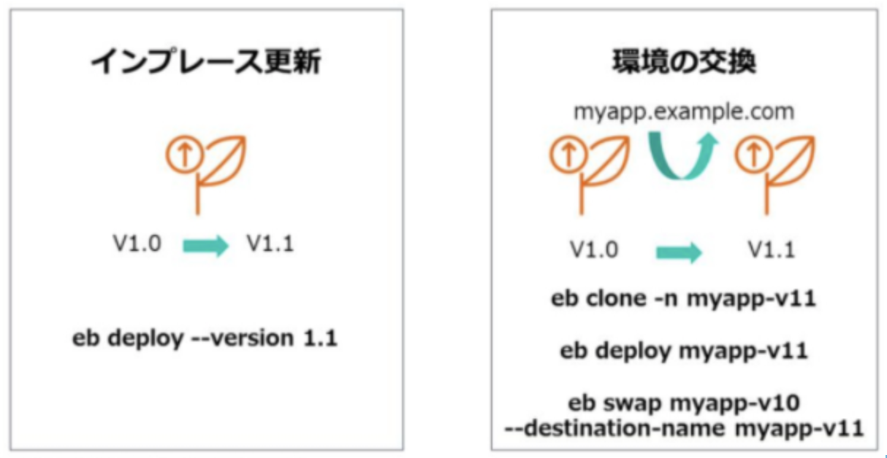
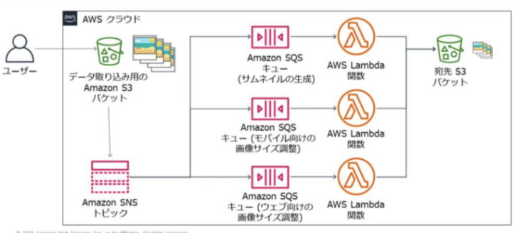
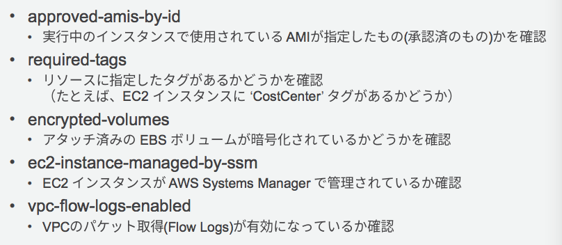
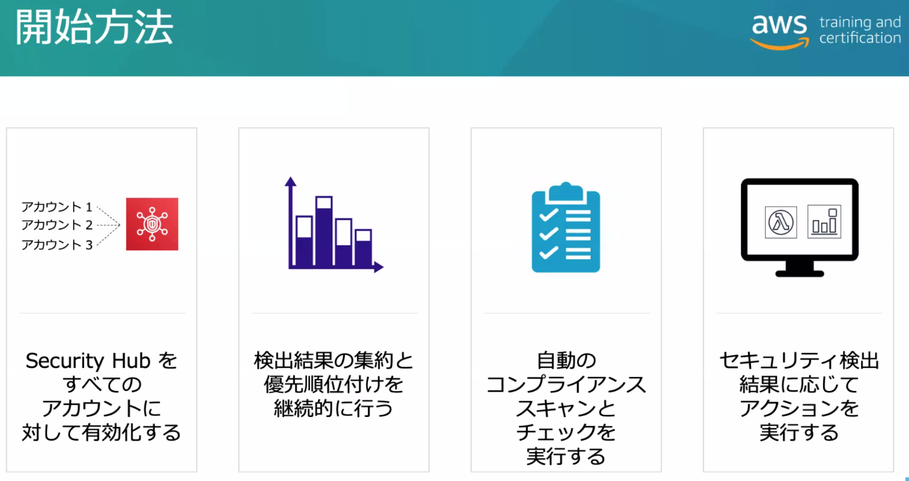
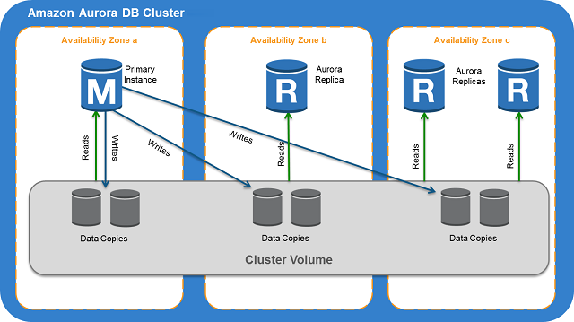
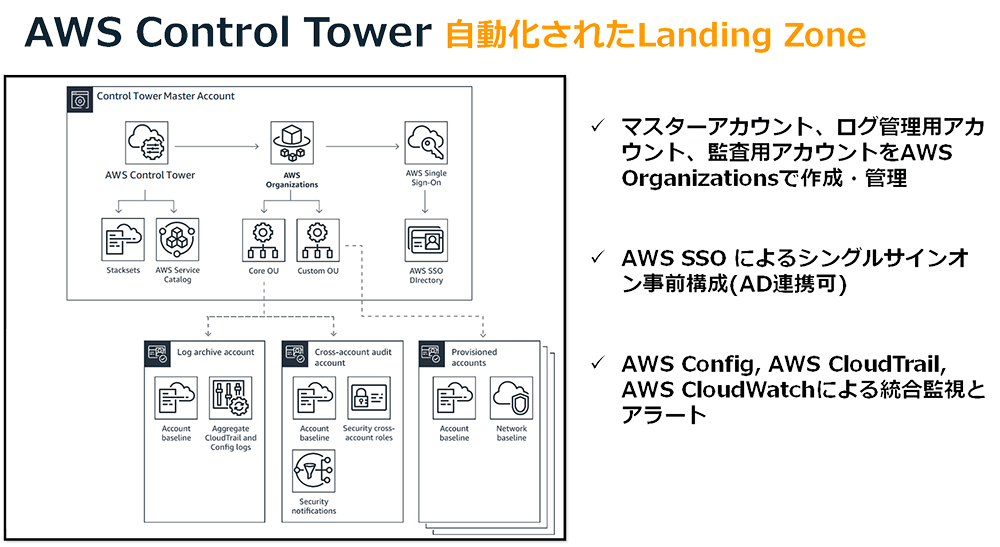
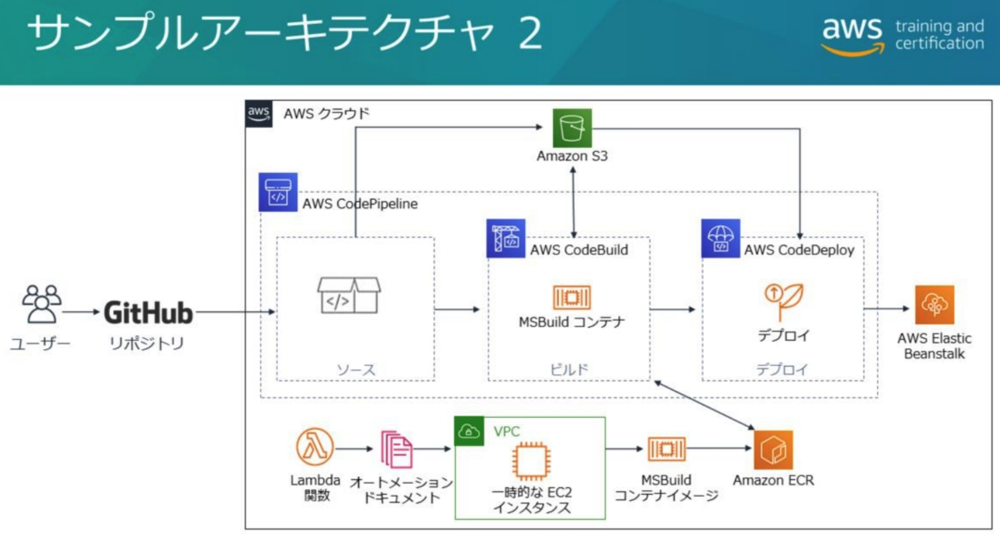

Ref. AWS - Security - Overview - 時間: 75問/180分 → 1問2分20秒 - 10分: 4問+ - 10問: 23分+ - 1時間: 25問
| 分野 | タイトル | 重み |
|---|---|---|
| 第1分野 | SDLC のオートメーション | 22% |
| 第2分野 | 設定管理と IaC | 17% |
| 第3分野 | 耐障害性の高いクラウドソリューション | 15% |
| 第4分野 | モニタリングとロギング | 15% |
| 第5分野 | インシデントとイベントへの対応 | 14% |
| 第6分野 | セキュリティとコンプライアンス | 17% |
モダンアプリケーションアーキテクチャ

- CloudMap コンテナのサービス間のルーティング
- App Mesh サービスメッシュによるコンテナの連携のマネージドサービス
AWS サービスのスコープ分類
1. VPC内リソース（VPC-scoped services）
ネットワーク的に VPC 内に存在し、AZ（サブネット）に紐づき、専用の ENI を持つリソース。
| サービス | 説明 |
|---|---|
| EC2 | サブネット単位で配置。ENI を持つ。 |
| RDS | マルチAZも含めてサブネットに配置される。 |
| ECS (EC2モード) | EC2 が VPC 内に配置される。 |
| EKS ワーカー/Pod（ENI割当） | Pod もENIを持ち VPCに属する場合もある。 |
| ElasticCache（Redis / Memcached） | サブネットに紐づく。 |
| Redshift | クラスタは VPC 内に配置。 |
| EFS | VPC 内のNFS共有ストレージ。EC2/ECS/EKSからマウント可能 |
| OpenSearch | VPC内に配置。 |
2. リージョン・スコープ （Region-scoped services）
物理的な配置の概念はなく、AWSのコントロールプレーンサービスとしてリージョン単位で提供される。VPCと独立している。
| サービス | 説明 |
|---|---|
| S3 | バケットはリージョンに存在。 |
| Lambda | AWS管理VPCで実行。 |
| CloudWatch | リージョンごとにメトリクス保存。 |
| CloudTrail | リージョン単位（＋Globalサービスイベント）。 |
| EventBridge | イベントバスはリージョン単位。 |
| KMS | CMK はリージョン固有。 |
| Secrets Manager | シークレットはリージョン単位。 |
| SSM Parameter Store | パラメータはリージョン単位。 |
| SNS / SQS | キュー・トピックはリージョン単位。 |
| Step Functions | ステートマシンはリージョン単位。 |
| Glue | リージョン単位でデータカタログ管理。 |
- ELB はリージョン・スコープだが、ターゲットは VPC 内リソース
- マルチ AZ にまたがる構造
- VPC 非接続 Lambda もターゲットにできる
3. グローバルサービス（リージョンを超えるサービス）
| サービス | 説明 |
|---|---|
| Route 53 | DNSは完全にグローバル。 |
| CloudFront | CDNグローバル。 |
| IAM（実質グローバル） | “IAMはグローバルサービス”と明記される。 |
| WAF（グローバル / リージョン両方） | CloudFront向けはグローバル。 |
| AWS Global Accelerator | グローバルIPを提供。 |
| Organizations | 組織全体で管理。 |
| Control Tower | マルチリージョン/複数アカウントを一元管理。 |
- IAM は内部的なリージョンレプリケーションで実質グローバルサービス
4. リージョンを跨いでデータ/エンドポイントが存在する特殊タイプ
| サービス | 補足 |
|---|---|
| S3 | API・ネームスペースはグローバル。 |
| DynamoDB Global Tables | 複数リージョンで同期。 |
| Aurora Global Database | リーダー領域が複数リージョンで構成される。 |
| EFS One Zone / Standard | データはAZだがアクセス可能性はリージョン。 |
| CloudWatch Logs Cross-region | 実質リージョンごとのストレージ＋一部グローバル統合。 |
- S3 はグローバルエンドポイント
s3.amazonaws.comとs3.ap-northeast-1.amazonaws.comのようなリージョンエンドポイントがある。(グローバルエンドポイントは現在は非推奨)
IAM ロール関連
-
CodeBuild - サービスロール:
- CodeBuildサービスが各種AWSサービス（例：CodeCommitからのソース取得、S3へのアーティファクト保存、ECRへのプッシュ）にアクセスするために必要。
- 認証情報は環境変数を介してビルドサーバーのコンテナ環境に引き継ぎ。
-
CodeDeploy - サービスロール:
- デプロイグループに指定し、デプロイターゲットのサービス等へのアクセスを許可。
- AWSCodeDeployRole, AWSCodeDeployRoleForECS, AWSCodeDeployRoleForLambda など。
-
CodeDeploy - インスタンスロール:
- CodeDeployエージェントがS3からリビジョンをpullするための、EC2インスタンスロールへの s3:Get, s3:List パーミッションの付与が必要。
- CloudWatchエージェントでインストールログを CloudWatch Logs に送る場合もパーミッションが必要。
-
CodeDeploy - オンプレミスインスタンス用のIAMロール:
- オンプレミスインスタンスが使用する、CodeDeployアクセス許可を持つIAMロールの作成。
- オンプレミスインスタンス上で sts assume-role を使用した一時的な認証情報の取得。
-
CodePipeline - クロスアカウントロール:
- 開発アカウントのパイプラインから本番アカウントへデプロイを実行できるよう、クロスアカウントロールを作成し、パイ プラインのサービスロールに設定。
- ロールの信頼ポリシーでリモートアカウントからの AssumeRole を許可。
-
Elastic Beanstalk - IAMロール:
- 環境構築時に自動的にプロビジョニングされるリソースの一つ。
-
ECS - タスク実行ロール (executionRoleArn):
- コンテナランタイムが使用するロールで、コンテナイメージのプル、CloudWatch Logsへのログ書き込み、Secrets Manager/Systems Managerへのアクセス許可などに必要。
-
ECS - タスクロール (taskRoleArn):
- コンテナ内のアプリケーションに割り当てるロール。
- "ecs-tasks.amazonaws.com" に AssumeRole を許可する信頼ポリシーを持つ必要あり。
-
ECS - コンテナインスタンスロール:
- ECSクラスターのEC2インスタンスのインスタンスロール。
- ECS API系だけでなく、ECRの ecr::GetAuthorizationToken 権限も指定。
-
Lambda - 実行ロール:
- Lambda関数がイベントソース（例: DynamoDB Streams）を読み込む権限など、AWSサービスへアクセスするために必要。
-
CloudFormation - IAMリソース作成時のCapability:
- IAMリソース（ロールなど）を作成するテンプレートには CAPABILITY_IAM または CAPABILITY_NAMED_IAM の指定が必要。
-
CloudFormation スタックセット - IAMロール:
- 全アカウントに共通のIAMロールを配布するなどの用途で利用。
-
Service Catalog - 起動制約 (Launch Constraint):
- エンドユーザーが製品（CloudFormationテンプレート）を起動する際に使用するロールの指定。
-
Cognito ID プール - IAMロールのマッピング:
- 外部IdPのユーザートークンのクレームに基づき、特定のIAMロールにマッピングするためのルールを設定。
- ルールに合致しない未認証ID（ゲスト）用のロールも設定可能。
-
STS (Security Token Service):
- AssumeRoleWithSAML: SAML 2.0対応IdPからの認証情報でロールを引き受け。
- AssumeRoleWithWebIdentity: OIDC互換IdPからの認証情報でロールを引き受け。
-
AWS SSO と AD連携:
- ADFS（Active Directory Federation Services）をIdPとして使い、ADユーザーがロールを引き受けるために使用。
- AWS管理コンソールへのSSOでは、AssumeRoleWithSAML を許可するロールを関連付け。
-
IAM Access Analyzer:
- リソースベースのポリシーを分析し、外部プリンシパルと共有されているIAMロールなどを検出。
-
Organizations - SCP (Service Control Policy):
- メンバーアカウントのルートユーザーの権限を制限可能。
- 例として、本番OUにデプロイ操作をDenyしつつ、パイプラインが使用するロールのみを許可する、といったガードレールの 適用。
CI/CD
Continuous Delivery vs Continuous Deployment (デプロイまで自動化)
CodeCommit
認証情報は IAM コンソールで登録
- SSH: キーペアを作り IAM ユーザに公開鍵を登録。
- HTTPS: IAM ユーザの Git 認証情報 (ユーザ名/パスワード) を生成する。
認証情報ヘルパー
- git コマンドの認証情報ヘルパーで aws-cli 経由でユーザの認証情報を取得。
KMS で保存コードをデフォルトで暗号化。
IAM ポリシーでリポジトリへのアクセス制御。(なお、リポジトリのリソースベースポリシーはない)
プルリクエストをコンソールまたは CLI で作成。
リポジトリトリガー (Trigger)
- コード Push などのリポジトリイベントで SNS, Lambda をトリガー。
- GitHub のフックにあたるもの。
通知ルール (Notification)
- SNS か AWS Chatbot に通知を投げる。主にプルリク系とブランチ系の通知。

- Code シリーズ共通に存在する機能。
CodeBuild/CodePipeline 連携
- EventBridge ルールを作成してイベントソースを CodeCommit にする。
- ターゲットを CodeBuild プロジェクトや CodePipeline パイプラインの ARN とする。
CloudTrail 連携
- CodeCommit API コールをキャプチャして証跡として S3 バケットに保存
管理ポリシー
- AWSCodeCommitFullAccess
- Grants full access to CodeCommit.
- AWSCodeCommitPowerUser
- Allows users access to all of the functionality of CodeCommit and repository-related resources
- Except it does not allow them to delete CodeCommit repositories or create or delete repository-related resources in other AWS services, such as CloudWatch Events.
- AWSCodeCommitReadOnly
- Grants read-only access to CodeCommit and repository-related resources in other AWS services, as well as the ability to create and manage their own CodeCommit-related resources (such as Git credentials and SSH keys for their IAM user to use when accessing repositories).
- 開発ユーザ全員に AWSCodeCommitPowerUser を与え、Lead 以外は master ブランチへの Push や Merge を明示的 Deny する、という問題例がよく出る。
CodeBuild
環境を Docker イメージで立ち上げ、ビルドとテストに使用。
ソースプロバイダー
- S3, CodeCommit, GitHub, GitHub Enterprise, Bitbucket
アーティファクト
- S3 バケットにアップロード。デフォルトで S3-KMS 暗号化。
ビルドコマンド
- buildspec.yml に記述。
タイムアウト
- 最長8時間まで。(さらに長時間のテストは Step Functions の Activity 等を使う)
- Lambda で出来ない時間のかかるパフォーマンステスト等を実施できる。
VPC
- 環境からの VPC アクセスのオプション指定。
環境変数
- 環境変数の設定。SSM パラメータストアからの取得も可能。
ログ
- オプショナルで CloudWatch Logs と S3 バケットにログを保存。
ビルドキャッシュ
- ビルドツールや依存モジュールのダウンロードやビルド時間を短縮できる。
- キャッシュタイプ
- S3
- サイズが大きくなくビルドに時間がかかるモジュールに向く。
- ローカル
- ダウンロードに時間がかかるような大きなファイルに向く。
- ビルドホストにマウントされるインスタンスストレージでのキャッシュ。
- DockerLayerCache ... コンテナイメージのビルドのためのキャッシュ
- SourceCache ... .git メタデータのキャッシュ
- CustomCache ... buildspec.yaml で指定するキャッシュ
- S3
buildspec.yml
- install フェーズ
- runtime-versions でビルドランタイムのインストール指定。
- dotnet, java, golang, php, nodejs, python, ruby をサポート。
- pre_build, build, post_build フェーズ
- command ブロックで コマンド実行。
- run-as
- 全体および各フェーズで実行ユーザ指定可能。
- finally ブロック
- 各セクションに指定。command ブロックでエラーがあっても必ず実行される。
- artifact セクション
- artifact として S3 に保存するファイルを指定。
- env セクション
- 環境変数設定。パラメータストアからも簡単に取得できる。
サービスロール
- CodeBuild サービスが各種サービスにアクセスするのに必要なロール。
- CodeCommit からのソース取得, S3 へのアーティファクト保存, ECR へのプッシュ等
- ビルドサーバのコンテナ環境にもサービスロール権限が引き継がれる (クリデンシャルが環境変数経由で渡される)
IAM ポリシー
- ビルドプロジェクトへのアクセス制御
- AWSCodeBuildAdminAccess, AWSCodeBuildDeveloperAccess, AWSCodeBuildReadOnlyAccess 等
CodePipeline 連携
- Build または Test アクションに設定可能
EventBridge 連携
- 例: CodeCommit をイベントソース、CodeBuild プロジェクトをターゲットにして、PR 契機に自動ビルドを実施
BuildArtifacts API
- ビルドアーティファクトの SHA256 ハッシュをとってパイプライン内でアーティファクトをチェックするという問題があった
CodeDeploy
デプロイ先
- EC2/オンプレサーバ (要 CodeDeploy エージェント, Windows, Linux をサポート)
- ECS (Fargate)
- Lambda
CodeDeploy アプリケーション
- 設定の単位。
リビジョン (EC2/オンプレのみ)
- S3, GitHub のいずれか。
- S3 の場合はデプロイ先 EC2 インスタンスロールで CodeDeploy エージェントに S3 へのアクセス権限の付与が必要。
- ECS はタスク定義の familiy+revision, Lambda はバージョンを更新する。
デプロイグループ (EC2/オンプレのみ)
- タググループか EC2 ASG を指定。
デプロイタイプ
- EC2: インプレースデプロイ, Blue/Green デプロイ
- ASG の Blue/Green では ASG 全体の置き換えによるデプロイメントも選択可能。
- Blue/Green ではトラフィックのルーティングをコントロールする ELB の指定が必須。
- オンプレ: インプレースのみ
- ECS, Lambda: Blue/Green のみ
- ECS: サービスにタスクセットと ELB ターゲットグループを作成して加重ターゲットグループ
- Lambda: 指定バージョン間で加重エイリアス
デプロイ設定
- EC2
- AllAtOnce, HalfAtATime, OneAtATime, Custom (=min. health hosts)
- Lambda:
- AllAtOnce, CanaryNPercentEveryNMinutes, LinearNPercentEveryNMinutes
- ECS:
- AllAtOnce, CanaryNPercentEveryNMinutes, LinearNPercentEveryNMinutes
トリガー
- DevpoymentStart, DeploymentSuccess, DeploymentFailure などのイベントを SNS 通知。
AppSpec ファイル (appspec.yml/.json)
- デプロイ処理の具体的な定義。リビジョンの root ディレクトリに配置。
- CodeDeploy エージェントによって実行される。
- ECS ではコンテナイメージが別途コンテナディレクトリに登録される必要があるので、AppSpec はコードと一緒に置かず S3 にファイル単体を置いても良い。
- files セクション
- source, destination
- resources セクション
- Lambda: Name, Alias, CurrentVersion, TargetVersion
- ECS: TaskDefinition ARN (リビジョン番号含む), LoadBalancerInfo (ContainerName, ContainerPort)
- hooks セクション
- デプロイ前後に実行するスクリプトファイルを指定する (ECS, Lambda では Lambda 実行)
- EC2 - インプレース
- ApplicationStop: 停止スクリプトを指定
- ApplicationStart: 起動スクリプトを指定
- ValidateService: 動作検証

- EC2 - Blue/Green
- ALB があるので AllowTraffic 前後のフックがある。
- 停止側のインスタンスには BlockTraffic 前後のフックしかない。
- Blue/Green を採用し 50% のカスタムデプロイ設定を行い、BeforeAllowTraffic フックでデプロイ中に作成される一時ファイルを削除する例:
- Launch an Application Load Balancer and use a blue/green deployment for releasing new application versions.
- Associate the Auto Scaling group and the Application Load Balancer target group with the deployment group.
- Create a custom deployment configuration for the deployment group in CodeDeploy with minimum healthy hosts defined as 50% and configure it to also terminate the original instances in the Auto Scaling group after deployment.
- Use the BeforeAllowTraffic hook within appsec.yml to purge the temporary files.
- Lambda
- インストール系のフックがない。
- ECS
- AfterAllowTestTraffic フックがある。デプロイグループでテストリスナー(オプショナル)を指定しない場合は呼ばれない。
- テストリスナーは Green の新タスクグループに一次的に設定される ALB リスナー
自動ロールバック
- デプロイ失敗かデプロイグループに設定したアラーム (例: CPU 使用率 80% 以上等) が発生した場合に以前のリビジョンにデプロイしなおす。
- 問題例: ALB のアラームをデブロイグループに設定、遅延が高まれば自動ロールバック
問題例: ECS のデプロイメント
- The app is hosted on a cluster of Auto Scaling ECS instances and its deployments are handled by AWS CodeDeploy.
- ALB health checks are not sufficient to tell that new version deployments are successful, rather you have custom validation scripts that verify all APIs of the application.
- You want to make sure that there are no 5XX error replies on the new version before continuing production deployment and that you are notified via email if results failed.
- You also want to configure automatic rollback to the older version when the validation fails.
解答: AfterAllowTestTraffic で Lambda でテストするが、ロールバックは Alarm によって発生させる
- Create your validation scripts on AWS Lambda and define the functions on the AppSpec lifecycle hook to validate the app using test traffic.
- Associate CloudWatch Alarms to your deployment group to have it trigger a rollback when the 5xx error alarm is active.
- Have AWS CloudWatch Alarms trigger an AWS SNS notification when the threshold for 5xx is reached on CloudWatch.
問題例: アプリケーションのエラーログでロールバック
- アプリケーションログを CloudWatch Logs に送信する。
- ログ内のエラーメッセージをモニタリングするメトリクスフィルターを作成する。
- エラー数が許容できない場合はアラームを開始する。
サービスロール
- デプロイグループに指定し、デプロイターゲットのサービス等へのアクセスを許可する。
- AWSCodeDeployRole ... ELB, ASG, タグ取得, ClaoudWatch Alarms 等
- AWSCodeDeployRoleForECS
- AWSCodeDeployRoleForLambda
- ECS, Lambda ではサービスロールで必要な権限を与えられるが、EC2ではインスタンスロールの考慮も必要。
CodeDeploy エージェント
- S3 から pull するためインスタンスロールに s3:Get*, s3:List* パーミッションが必要。
- CodeDeploy エンドポイントに HTTPS/443 でアクセス
- パブリックサブネットならインターネット経由、プライベートなら VPC エンドポイント経由。
- VPC エンドポイントは ECS や VPC Lambda でもプライベートサブネットなら必要。
- インスタンス上のインストールログを CloudWatch Logs で見るには CloudWatch エージェントを別途インストール。
オンプレインスタンスのセットアップ
- オンプレインスタンスが使用する、CodeDeploy アクセス許可を持つ IAM ロールを作成する。
- オンプレインスタンス上で sts assume-role で認証情報のセットを取得して保存する。
- CodeDeploy エージェントをオンプレインスタンスにインストールする。
aws deploy register-on-premises-instanceでオンプレインスタンスを登録する。- オンプレミスインスタンスにタグを設定する。(コンソールか CLI コマンド)
- タグに基づいてデプロイグループをセットアップする。
- デプロイグループを使用してアプリケーションをデプロイする。
AppSpec 内で見える環境変数 (カスタム環境変数を渡す方法はない)
- APPLICATION_NAME
- DEPLOYMENT_ID
- DEPLOYMENT_GROUP_NAME
- DEPLOYMENT_GROUP_ID
- LIFECYCLE_EVENT
Bundle from S3
- BUNDLE_BUCKET
- BUNDLE_KEY
- BUNDLE_VERSION
- BUNDLE_ETAG
Bundle from GitHub
- BUNDLE_COMMIT
CodePipeline
ステージ
- ソースステージ
- ビルドステージ (オプショナル)
- デプロイステージ (オプショナル)
ソースステージ
- 入力アーティファクトが更新されると自動でパイプラインが起動される。
- CodeBuild のソースプロバイダー + ECR
- AWS リソースの CodeCommit, ECR, S3 は CloudWatch Events/EventBridge で監視。
- 外部リソースの GitHub, Bitbucket は CodeStarSourceConnection プロバイダーで Webhook で監視。
ビルドステージ
- CodeBuild, Jenkins
デプロイステージ
アクション
- Approval アクション: 手動承認 (SNS)
- Codepipeline コンソール上または SNS で通知される URL で Approve/Reject できる。(サブスクライバは任意に追加可能)
- カスタムアクション
- Codepipeline サービスから Job をポーリングして、Job 実行後にレスポンスを返す。
- パラレルアクション(=アクショングループ)とシーケンシャルアクション
- runOrder: シーケンスの順番。パラレルアクションは同じ runOrder になる。
- 問題例: 複数の Lambda のデプロイを並行させることでパイプラインの処理時間を早める
アーティファクト
- 各ステージのアーティファクトが S3 に置かれ、次のステージに渡される。
- S3 バージョンを使用して作成の度にバージョニングされる。
- デフォルトで S3 の AWS 管理キー (aws/s3) を作成して SSE-KMS 暗号化。
- カスタマー管理キーでないとキーポリシーを変更できずクロスアカウントでの使用ができない。
クロスリージョンアクション
- クロスリージョンでビルドプロバイダー/デプロイプロバイダー等を呼び出すことが可能。
- ソースアクション、サードパーティーアクション、カスタムアクションは不可。
- 各リージョンにアーティファクトストア (S3バケット) と SSE-KMS キーが必要となる。
- リージョン間でのアーティファクトのコピーが行われる。
- https://docs.aws.amazon.com/codepipeline/latest/userguide/actions-create-cross-region.html
クロスアカウント
- パイプラインのある開発アカウントとデプロイ先の本番アカウントのクロスアカウント設定。
- パイプライン側で KMS カスタマー管理キーを作成。デプロイ先アカウントから使用できるようキーポリシーを設定。
- S3 バケットにもデプロイ先アカウントからアクセスできるようバケットポリシーを設定。
- デプロイ先アカウントに CodeDeploy プロジェクトを作成。デプロイ先インスタンスのインスタンスロールに KMS, S3 へのアクセス権も設定。
- この CodeDeploy を開発側アカウントのパイプラインから実行できるよう、クロスアカウントロールを作成して、パイプラインのサービスロールに設定。
Ref. クロスアカウントロール
- ロールの信頼ポリシーでリモートアカウントからの AssumeRole を許可。
- プリンシパルのポリシーでリモートロールへの AssumeRole を許可。
EventBridge 連携
- 単にパイプラインから Lambda 呼びたければ Invoke アクションがあるので、Fail の際などに呼ぶ場合にこちらを使う。
問題例: CloudFormation アクションで CFn テンプレートのパラメータを指定して prod/staging/dev のコンフィグを分ける
- Launch a new pipeline using AWS CodePipeline that has multiple stages for each environment and configure it to use input parameters.
- Switch the associated UserData of the EC2 instances to match the environment where the application stack is being launched using CloudFormation mappings.
- Specify parameter overrides for AWS CloudFormation actions.
CodeStar
Code サービスによる CI/CD パイプラインをアプリのテンプレートから簡単に作成できる。
- リポジトリ: CodeCommit / GitHub
- デプロイターゲット: EC2 / Lambda / Beanstalk
- パイプライン: CodePipeline
- ビルドプロジェクト: CodeBuild
- デプロイツール: CodeDeploy, CloudFormation, Beanstalk
- CloudWatch メトリクス
- プロジェクト管理ダッシュボード
S3
Ref.AWS - Security - S3, Glacier, RDS, DynamoDB
ライフサイクルルール
- バケットのオプション。一定期間が過ぎたオブジェクトのライフサイクルを指定。
- 移行 (Transition): 別のストレージクラスに移行。Glacier へのアーカイブも可能。
- 失効 (Expiration): 削除
- フィルター要素
- キープレフィックスおよびタグで対象を選択できる
- バージョニングの最新とそれ以前で個別に設定できる。
- 問題例: LegalHold タグ true のドキュメント以外は 90 日で削除したい
- S3 イベントでオブジェクト作成時に Lambda 関数を開始する。LegalHold タグが存在しない場合は false の値を追加する。
- LegalHold タグが false のフィルタールールを指定した S3 ライフサイクルポリシーを作成し、90 日より古いオブジェクトを削除するよう設定する。
Deployment Strategy
用語
- ダークローンチ
- フィーチャーフラグで一部のインスタンスで機能を有効にする。
- セグメンテーション
- デプロイを小さなチャンクに分割することでリスク軽減。
- リージョン, AZ, タグ, ASG, etc.
インプレース
- インスタンスが並列しないので低コスト。
- CodeDeploy, Beanstalk (All at once)
イミュータブル
- インプレースの反対。新しいインスタンスまたは並列環境を作ってデプロイする。
ローリング
- 本番環境の稼働中インスタンスを一部切り離してデプロイし、再びオンラインに戻すを繰り返す。
- システム全体のダウンタイムなし。ダウングレードはある。
- CodeDeploy: インプレースの OneAtATime, HalfAtATime, Custom
- Beanstalk: ローリング, 追加バッチとローリング
- EC2 Auto Scaling: AutoScalingRollingUpdate
- ECS Service: deploymentController=ECS
Blue/Green
- トラフィックを振り分けるため、トラフィックルーティングの仕組みが必要。
- システムのダウングレードなし。
- ロールバックが容易。
- CodeDeploy, Beanstalk(Immutable)
- EC2 Auto Scaling: AutoScalingReplacingUpdate
Blue/Green デプロイの実現方法
Route53 CNAME 切り替え (AllAtOnce)
- エイリアス (CNAME) が指す ELB の DNS 名を切り替える。
Route53 加重ラウンドロビン
ELB ターゲットグループ切り替え
ALB 加重ターゲットグループ
- Blue/Green のターゲットグループに重みを指定。
- NLB にはない機能。
Auto Scaling スケールアウト/スケールイン
- デフォルトの終了ポリシーが古い起動設定により起動されたインスタンスから終了させることを利用。
- 起動テンプレートでAMIを変更後、インスタンス数を増やしてから減らすと自動的に古いインスタンスがなくなる。
API Gateway Canary ステージ
Lambda 加重エイリアス
- route-config 設定でセカンダリのバージョンと比率を設定。
SAM の AWS::Serverless::Function
- DeploymentPreference プロパティで CodeDeploy の Lambda デプロイメントを設定できる。
CodeDeploy
- EC2: ALB の加重ターゲットグループで移行。
- ECS: 新しいタスクセットと ELB ターゲットグループを作成、加重ターゲットグループで移行。
- Lambda: 加重エイリアスを使用。
Elastic Beanstalk
- eb clone/swap による DNS カットオーバー
- eb deploy の展開タイプ - イミュータブル (Immutable)
CodeDeploy のデプロイ
CodeDeploy のデプロイタイプ
- EC2/オンプレ
- インプレース (=AllAtOnce 以外はローリング)
- Blue/Green (=イミュータブル)
- ECS, Lamda
- Blue/Green のみ (仕組み的にコンテナやLambdaはインプレース切り替えの概念がない)
デプロイ設定

カスタム
- HalfAtOnce の代わりの割合か台数で必要な稼働中インスタンス数 (min. health) を指定する。
EC2/オンプレ
- インプレース(=ローリング)
- 稼働中インスタンスを停止せずに新バージョンのアプリを配置/起動。
- 各インスタンスでアプリを停止後、新リビジョンをインストールして起動・検証。
EC2
- Blue/Green デプロイ
- Green インスタンス群を起動、新リビジョンをインストールして起動・検証。
- ELB で実現されるので ELB が必須。
- 「Auto Scaling グループの自動コピー」オプション
- ASG 全体の置き換えによるデプロイメントを行う。
ECS
- 新しいタスクセットと ELB ターゲットグループを作成、加重ターゲットグループで移行。
Lambda
- 指定された新旧バージョンで加重エイリアス(カナリアリリース)を行う。 - route-configでセカンダリバージョンの比率を指定。
Elastic Beanstalk のデプロイ
デプロイポリシー (Deployment policy)
All at once
- 単純なインプレースデプロイ。新バージョンを全インスタンスに同時展開。
- 環境の全インスタンスのアプリケーションが短時間停止する。
- 展開終了までの合計時間は最短。インスタンスの追加コストなし。
Rolling
- 環境のインスタンスを複数バッチに分割、バッチごとに新バージョンをデプロイ。(インプレース)
- バッチサイズ分のインスタンスを LB からデタッチしてデプロイ実施。ヘルスチェックが通ればそのバッチを LB に再アタッチ。全インスタンスにデプロイがされるまで繰り返し。
- インスタンスの追加コストなし。
Rolling with additional batch
- バッチサイズ分の新しいインスタンスにデプロイして環境に追加した後でローリングを実行。
- 追加バッチのインスタンスは最終的には消去される。
Immutable (=Blue/Green)
- テンポラリな ASG を作成して新バージョンを展開したインスタンスのフルセットを起動。
- 新しいインスタンスでヘルスチェックが Fail した場合は終了し、元のインスタンスがそのまま残る。
- Fail 時のロールバックが迅速。
- Success した場合は Green のインスタンスをプロダクションの ASG に移動する。
- Blue のインスタンスは削除されるのでイミュータブル。
- 一時的にインスタンスコストが倍。
手動 Blue/Green デプロイ
- eb clone で既存環境のクローンを作成後、新バージョンをデプロイしてテスト。
- eb swap で内部の CNAME を既存環境から新環境に切り替え。(DNS カットオーバー)
- 

- 2つの環境を作って Route53 加重ルーティングをする例

問題例: Serveless のバックエンド API 層と Web アプリケーション層を Blue/Green する要件
- Deploy the DynamoDB tables, Lambda functions, and Amazon ES domain using AWS CloudFormation.
- Deploy changes with an AWS CodeDeploy blue/green deployment.
- Host the web application in AWS Elastic Beanstalk and set the deployment policy to Immutable.
ECS のデプロイ
サービスの deploymentController 設定を次のいずれかに設定する:
- ECS
- ローリング更新
- サービスのタスク定義を更新すると ECS はローリングデプロイを実施する。
- 古いバージョ ンのコンテナへの接続をドレイニングし、新しいコンテナを ALB に登録する。
- CODE_DEPLOY
- Blue/Green
- EXTERNAL
- ECS API でサービス・タスクを制御する外部のデプロイコントローラー
Infrastructure as Code/Configuration Management
AWS - CloudFormation, Elastic Beanstalk, OpsWork
- CloudFormation は AWS リソースのプロビジョニングに特化。
- Beanstalk, OpsWorks はインフラのプロビジョニング、アプリケーションのデプロイ、運用時のモニタリングまで全体をカバー。
- Web アプリの定番構成 → Beanstalk
- Web アプリでない、定番構成でない、既に Chef/Puppet 使っている → OpsWork
CloudFormation
Pseudo Parameters
SSM Parameters Store 参照
Parameters:
InstanceType:
Type: 'AWS::SSM::Parameter::Value<String>'
Default: /EC2/InstanceType
ImageId:
Type: 'AWS::SSM::Parameter::Value<AWS::EC2::Image::Id>'
Default: /EC2/AMI_ID
Mappings セクション
- リージョンごとに使用する AMI ID を指定するマッピングテーブルなどを定義する。
- AMI はリージョンリソースなので、リージョンごとに AMI ID が異なる。
- Fn::FindInMap function でアクセス
- !FindInMap [ MapName, TopLevelKey, SecondLevelKey ]
Conditions セクション
- テンプレート内で宣言的に条件指定を行って Resources, Outputs の生成を制御する。
- 各 Resource, Output の Condition 属性で参照する
Outputs セクション
- スタック内の値をコンソールや CLI にアウトプットする。
- ネストしたスタックの Outputs は 親スタックから Stack リソースの属性として参照できる。
- !GetAtt StackName.Output.Name
- Export することで Fn::ImportValue で他のスタックからも参照できる。
- Export 名の名前空間は同一アカウントのリージョン内。
CreationPolicy 属性
- 生成完了ポリシー指定: 例) AutoScalingGroup リソースが作成時、グループ内の2個のインスタンスからシグナルがとどくまで生成完了とならず、次に進まない。
CreationPolicy:
ResourceSignal:
Count: 2
UpdatePolicy 属性
- AWS::AutoScaling::AutoScalingGroup
- AutoScalingRollingUpdate
- AutoScalingReplacingUpdate
- AWS::Lambda::Alias
- Lambda の加重エイリアスを設定する。
alias:
Type: AWS::Lambda::Alias
Properties:
FunctionName: !Ref function
FunctionVersion: !GetAtt newVersion.Version
Name: BLUE
RoutingConfig:
AdditionalVersionWeights:
- FunctionVersion: !GetAtt version.Version
FunctionWeight: 0.5
DeletionPolicy 属性
- Delete, Retain, Snapshot
- スナップショット対象: EBS, RDS, ElastiCache, Redshift
スタックのオプション
TimeoutInMinutes
- スタックのステータスが CREATE_FAILED になるまでに待機可能な時間。
DisableRollback
- ロールバック自体の無効化。
- Fail した場合も残ったリソースはスタックごと手動で削除できる。
OnFailure
- スタック作成に失敗した場合に実行するロールバック操作を指定。
- DO_NOTHING、ROLLBACK、DELETE のいず れか。
- DETETE ではスタックの情報そのものが消去されるのでスタックのログも見られない。
- DisableRollback が有効な場合、OnFailure は設定できない。
CAPABILITY_IAM / CAPABILITY_NAMED_IAM
- IAM リソースを作成するテンプレートの create-stack/update-stack には CAPABILITY_IAM または CAPABILITY_NAMED_IAM の capability の指定が必要になる。
スタックのネスト
- AWS::CloudFormation::Stack リソースで別のテンプレートをネストする。
- ネットワーク層とアプリ層のテンプレートをネストする例
- DependsOn で作成順序をコントロール。そうしないと並列で作成されてしまう。
- ネットワークスタックの Outputs の値をアプリケーションスタックの Parameters で渡す。
- スタック更新時は親スタック (root stack) を更新する。
クロススタックリファレンス (Export/ImportValue)
- ネストと異なり同時にスタックを作らない場合のスタックの関連付け 。
- 他のスタックで Export した名前を別スタックで ImportValue で参照する。
MetaData 属性 (リソースメタデータ)
- 各リソースの MetaData 属性に指定できる任意の Key-value オブジェクト。
- AWS::CloudFormation::Init キーに指定されたオブジェクトの指定を cfn-init が処理。
AWSTemplateFormatVersion: '2010-09-09'
Resources:
MyS3Bucket:
Type: AWS::S3::Bucket
Metadata:
Object1: Location1
Object2: Location2
UserData 属性 (EC2)
- Fn::Base64 でテンプレート内に記載した UserData スクリプトの全体を渡すことができる。
- (参考) UserData 実行のアウトプットは /var/log/cloud-init-output.log に書き込まれる。
- cloud-init は UserData を実行する機能。
cfn-init
- パッケージのインストール、 ファイル作成、サービス開始などの初期化処理に使用。
- MetaData に指定された AWS::CloudFormation::Init に記述された処理を実行する。
- 通常はインスタンスの UserData スクリプトの一部として実行される。
- ログ出力: /var/log/cfn-init.log
cfn-signal
- CreationPolicy 属性と WaitCondition リソースの ResourceSignal 属性で使用されるシグナルを送信するために使用
- WaitCondition はテンプレートのリソースの1つとして作られ、このリソースが生成されるまでスタック生成全体が終了されないようにできる。
cfn-hup
- リソースメタデータの変更が検出されたときにカスタムフックを実行するために使用される。
- スタック更新で起動中インスタンス内で更新処理を実行したい場合に使う。
- デーモンとしてバックグラウンド動作するので通常は UserData で起動する。
cfn-get-metadata
- リソースメタデータを取得して独自処理をする場合に使用する。
- MetaData の内容が JSON で取得される。
トラブルシューティング
- プライベートサブネットのインスタンスからシグナルを送るために CloudFormation サービスに NAT 等でアクセスできるようにする必要がある。
リソースの保護
DeletionPolicy 属性
- スタックが削除される時にリソースを保持(Retain)またはバックアップ(Snapshot)できる。
TerminationProtection: スタックの削除保護
- スタックの削除が実行できなくなる。スタック作成時と作成後にも設定できる。
- 削除保護を変更すると、ネストされたスタックにも反映される。
スタックポリシー
- スタックにつけられるリソースベースポリシー。
- 重要なスタックリソースを変更する意図しないスタック更新を拒否できる。
- まず全て Allow して、保護したいものを Deny で指定する
ドリフト検出
- CloudFormation 外部でスタックのリソースに直接変更が行われたか検出できる。
- AWS コンソールでスタックアクションからドリフト検出を実施し、ドリフト詳細の表示を行う。
- スタック全体のステータス: NOT_CHECKED, IN_SYNC, DRIFTED
- リソースのステータス: NOT_CHECKED, IN_SYNC, DELETED, MODIFIED
- ネストされたスタックのドリフトは検出しない。ネストされたスタックに対して直接ドリフト検出の実行が必要。
カスタムリソース
- 外部リソースをカスタムリソースプロバイダー (Lambda 等) で作成・更新・削除する。SNS と S3 署名付き URL で実装。
- ユースケース:
- 空でない S3 バケットではスタック削除が Fail するため、Lambda カスタムリソースで削除するのは頻出のユースケース。(DeletaionPolicy が Delete でも Fail する)
- リージョン毎に異なる AMI ID を Lambda カスタムリソースで取得して、カスタムリソースの Attribute として AMI ID を返すようなユースケース。
- Create/Update/Delete といったリクエストを SNS メッセージでカスタムリソースプロバイダに送信。
- カスタムリソースプロバイダがメッセージを処理し、Success/Fail の結果が S3 署名付き URL 経由で CloudFormation に返される。
- Lambda を使用する場合は直接 Lambda の ARN を指定でき、SNS トピックを作成する必要がない。
CloudFormation スタックセット
- クロスアカウント/クロスリージョンに同一スタックを1度のオペレーションで作成、更新、削除できる。
- 全アカウントに AWS Config を展開したり、共通の IAM ロールを配布するなどの用途。
- ターゲットアカウントにスタックを作成する前に、 管理者アカウントとターゲットアカウントの間に信頼関係をセットアップする必要がある。
- スタックセットはリージョンリソースなので、他のリージョンで表示や変更できない。
- StackSets のテンプレートがある: クロスアカウントで CloudTrail, Config を有効にするのに使われる
AWS CDK (Cloud Development Kit/クラウド開発キット)
- プログラミング言語から CloudFormation テンプレートの構築・操作をコーディングするライブラリとツールキット。
Elastic Beanstalk
- Web サーバ環境と Worker 環境 (Web server tier & Worker tier)
- プロビジョニング・負荷分散・モニタリングなどを自動設定:
- EC2, EBS, RDS, セキュリティグループ, IAM ロール
- ELB, Auto Scaling
- CloudWatch Alarms, SNS
- プラットフォームのアップデート。
アプリケーション
- 環境、環境設定、アプリケーションバージョンの入れ物
- 複数環境を起動できる。
環境
- インフラ環境 (Web/Worker)
- アプリケーションバージョン (アプリのコード) をデプロイする場所。
アプリケーションバージョン
- eb deploy するたびにアプリケーションバージョンができる
- ライフサイクル: バージョンの保持期限を個数又は日数で管理する
環境タイプ
- 単一インスタンス: Single-instance
- 単一の Web サーバインスタンスに EIP がつき、単一の DB インスタンスができる。
- 負荷分散: Load balanced
- ELB と Auto Scaling が付き、Multi-AZ を設定できる。
- DB がプライマリー・スタンバイ構成になる。
保存済み設定: Saved configurations
- 起動中の環境設定をテンプレートとして保存して他のリージョンやアカウントで展開できる
- インスタンスタイプや ASG などの環境設定なので、コードや .ebextensions は含まれない。
- eb config save dev-env --cfg prod
- サービス側に設定が保存される。
- .elasticbeanstalk/saved_configs 配下に prod.cfg.yaml ができ、ローカルで直にファイルを編集できる。
- eb config put prod
- ローカルで編集した設定をサービス側に保存する。
- eb config dev-env --cfg prod
- サービス側に保存された設定を環境に適用。
.ebextensions フォルダ
- アプリケーションパッケージ内に配置する設定スクリプト
- 操作を指定した (分割された) 設定ファイルを配置。eb deploy で環境に適用。
- services:
- 各種サービスのコンフィグを設定: EC2, VPC, Auto Scaling, ELB, RDS 等。
- resources:
- CloudFromation テンプレートのリソース記述で任意のリソースを作成できる。
- ただし DB のように消えたら困るリソースは環境外に個別に作成したほうがよい。
- commands
- インスタンス起動後、アプリケーションのファイルが展開される前に実行されるコマンド
- バックアップや旧ファイルのクリーンアップなど。
- container_commands
- アプリケーションのファイルが展開された後、アプリのデプロイ前に実行される
- デプロイ前の DB マイグレーションや設定ファイルの更新など
- leader_only: true ... 複数あるインスタンスのうち１つだけで実行
.platform/hooks フォルダ
- /opt/elasticbeanstalk/hooks/ で実行される
- preinit - アプリケーションのデプロイ前
- appdeploy - アプリケーションのデプロイ中
- postinit - アプリケーションのデプロイ後
- configdeploy - ユーザによる設定変更時
- restartappserver - ユーザによるリスタート時
- デプロイ後にコマンド実行するには .ebextentions/files で appdeploy/post フォルダにスクリプトを作成する
デプロイポリシー
- All at once
- Rolling
- Rolling with additional batch
- Immutable
Worker 環境
- SQS キューのリッスンまたはスケジュールでタスクを処理する Worker アプリケーション。
- スケジュールは cron.yaml で設定。
- Web サーバ環境と並行して Worker 環境を立てて時間のかかる処理を非同期実行。
Docker in Beanstalk
- プラットフォームに Docker を選ぶ場合 ECS の使用を選択できる。
- EC2 Auto Scaling でスケーリングされる ECS クラスターが作成される。
- 環境のコンテナ群 (タスクセット) が ECS Service により起動される。
- ECS Service Auto Scaling によるタスク数のスケーリングも設定される。
設定の優先順位
- 環境に直接 API (CLI) で適用される設定
- 保存済み設定
- 設定ファイル (.ebextensions)
- デフォルト値
問題例: Beanstalk からの RDS のデカップリング
- RDS is used as the database, and it is tightly coupled to the Elastic Beanstalk environment.
- A DevOps Engineer noticed that if you terminate the environment, its database goes down as well.
- This issue prevents you from performing seamless updates with blue-green deployments.
- How can the DevOps Engineer decouple the database instance from the environment with the LEAST amount of data loss?
解答
- Decouple the RDS instance from your Elastic Beanstalk environment using the blue/green deployment strategy to decouple. (Blue/Green で既存環境を稼働させてダウンタイム縮小しながら RDS をデカップリング)
- Take an RDS DB snapshot of the database and enable deletion protection. (スナップショットと保護)
- Set up a new Elastic Beanstalk environment with the necessary information to connect to the RDS instance.
- Before terminating the old Elastic Beanstalk environment, remove its security group rule first before proceeding.
- Beanstalk 環境のインスタンスから RDS に接続するには RDS 側の SG で環境の SG からの Ingress アクセスを許可する必要があるが、このルールによる依存関係の残したままだと環境の削除が FAIL する。
- 環境側の SG が RDS の SG に参照されたままなので、利用中あつかいになる。
AWS OpsWorks
スタック
- 複数レイヤにまとめられた AWS リソースのスタック
レイヤー (Layer)
- 機能別のインスタンスグループ
- ロードバランサー層、アプリケーションサーバ層、DB 層などのレイヤにまとめられた AWS リソース
- インスタンスタイプ
- 24/7: 常時稼働
- Time-based: スケジュールで起動・停止（例: 夜間バッチ）
- Load-based: CPU などの負荷指標でスケール制御
クックブックとレシピ
- クックブックリポジトリ
- Git、S3、HTTP など、Chef クックブックの保存場所。
- レシピ
- レイヤーごとに実行される設定スクリプト。
- OpsWorks スタックは各ライフサイクルイベントで対応するレシピを自動実行。
- インスタンスにアプリケーションをデプロイする際、
Deployライフサイクルイベントがトリガーされ、レイヤーのデプロイレシピがインスタンスで実行される。
ライフサイクルイベント
各レイヤーでライフサイクルイベントごとに実行するレシピを指定できる。
- Setup
- This event occurs after a started instance has finished booting.
- Configure
- This event occurs on all of the stack's instances when one of the following occurs:
- An instance enters or leaves the online state.
- You associate an EIP address with an instance or disassociate one from an instance.
- You attach an ELB to a layer, or detach one from a layer.
- いずれか1つのインスタンスがオンライン/オフラインになった際に全てのインスタンスで実行される。
- This event occurs on all of the stack's instances when one of the following occurs:
- Deploy
- This event occurs when you run a Deploy command, typically to deploy an application to a set of application server instances.
- Undeploy
- This event occurs when you delete an app or run an Undeploy command to remove an app from a set of application server instances.
- Shutdown
- This event occurs after you direct OpsWorks Stacks to shut an instance down but before the associated EC2 instance is actually terminated.
問題例
You are working as a DevOps engineer for a leading telecommunications company which is planning to host a distributed system in AWS. Their system must be hosted on multiple Linux-based application servers which must use the same configuration file that tracks any changes in the cluster such as adding or removing a server. The configuration file is named as tdojo-nodes.config which contains the list of private IP addresses of the servers in the cluster and other metadata.
Which of the following is the MOST automated way to meet the above requirements?
解答
Layer the application server nodes of the cluster using AWS OpsWorks Stacks and add a Chef recipe associated with the Configure Lifecycle Event which populates the tdojo-nodes.config file. Set up a configuration which runs each layer's Configure recipes that updates the configuration file when a cluster change is detected.
自動ヒーリング
- OpsWorks Stacks agent との疎通確認でインスタンスのヘルスチェック。
- Fail すると自動ヒーリングが新しいインスタンスのプロビジョンを実行。
- Fail のイベントは EventBridge で監視できる。
- OpsWorks は Auto Scaling を使用していないため必要。
Container Services
ECS
Task Definition
- (複数の)コンテナ定義、コンテナの CPU/メモリサイズ、タスク実行ロール
- コンテナへのボリュームマッピングやポートマッピング
- ネットワークモード (VPC)
- docker-compose.yaml 相当の設定
Service
- ロードバランシングされスケーリングも可能な、インバウンド接続される外部公開サービスの1単位
- Task の desired count の維持 -> Auto Healing
- ELB によるトラフィックルーティング
- 起動方式: Launch Type (EC2/Fargate), Capacity Provider Strategy
- デプロイ管理: Rolling update / Blue-Green（CodeDeploy）
- Service Auto Scaling: CPUなどのメトリクスに応じてタスク数を増減
Capacity Provider（CP）
- タスク実行インフラの抽象化。旧来の Launch Type（Fargate/EC2）より柔軟で、現在の推奨方式。
- Capacity Storategy:
FARGATE/FARGATE_SPOT/EC2（ASG）のタスク配分
ECS クラスタ
- タスク実行環境の論理スコープ。VPC と実行環境設定 (Launch Type/CP) を設定。
- クラスタごとに1つ以上の CP が登録できる (FARGATE CP & EC2 CP)
- Fargate であってもコンテナは VPC 内リソース。クラスタ作成時に VPC を設定する。
ECS エージェント
- コンテナインスタンス (EC2) で起動するデーモン。ECS API のやり取りを行う。Fargate では意識不要。
- コンテナインスタンスロールが適用される。
- ECS クラスターの EC2 インスタンスのインスタンスロールのこと。
- ECS API 系だけでなく、ECR の
ecr::GetAuthorizationToken権限も指定。 - ただし、実際の pull はタスク実行ロールでコンテナランタイムが実施。
ECS エージェントの問題例: イメージを更新してタスクを再起動してもコンテナが更新されない場合がある
- 正しく起動しているコンテナもあるので、クラスターインスタンスの ECS エージェントの異常が原因と考えられる。
TaskDefinition
family
- タスク定義の名前。family + revision でタスク定義を特定する。
- タスク定義はイミュータブルなので、タスク定義更新時は新しい revision を作成する必要がある。
タスクロール: taskRoleArn
- コンテナ内のアプリケーションに割り当てるロール。
- ECS タスク ("ecs-tasks.amazonaws.com") に AssumeRole を許可する信頼ポリシーをもつロールを作成。
- 設定すると ECS Agent により AWS_CONTAINER_CREDENTIALS_RELATIVE_URI という環境変数が設定され、コンテナ内の SDK/CLI はこの環境変数があるとそちらからクリデンシャルを取得する。
タスク実行ロール: executionRoleArn
- コンテナランタイムに使用されるロール。TaskDefinition に記載する諸々の処理に必要な権限。
- コンテナイメージのプル、コンテナログの CloudWatch Logs への書き込み (ref. awslogs ロギングドライバ)、Secrets Manager/Systems Manager へのアクセス許可。
networkMode
containerDefinitions
- 各コンテナの定義 (containerDefinition) のリスト。
- イメージや portMappings 等、docker run に指定するパラメータとなる。
- memory/memoryReservation
- 各コンテナのメモリ上限・予約指定 (オプショナル)
- タスクサイズ (cpu/memory) がタスク全体の割り当てサイズを指定。
- 環境変数の設定
- environment
- secrets
- ASM/SSM Parameter Store のパラメータ名の ARN で参照。
- タスク実行ロールでアクセス権が必要。
- logConfiguration
- docker run --log-driver オプションの指定。
- "awslogs" で CloudWatch にログを送れる。
- 問題例: ECS (ALB 使用) のログを取得する
- Create the required IAM Policy and attach it to the ecsInstanceRole. Install the Amazon CloudWatch Logs agent on the Amazon ECS instances. Use the awslogs Log Driver in the Amazon ECS task definition.
- Capture detailed information about requests sent to your load balancer by enabling access logging on the Application Load Balancer. Configure it to store the logs to the S3 bucket.
Task Definition の実行
- Task Definition を直接実行する run-task と、Service で指定数のタスク起動を維持する方法の2つがある。
- Task Definition は EventBridge からも実行できる
Service
Service は ECS Cluster 内に作成し、起動する Task Definition とタスク数等を指定する。
基本指定項目
- タスク定義: family & revision
- クラスター
- サービス名
- サービスタイプ
- REPLICA
- DAEMON: インスタンス数と同じ数のタスクを実行する
- タスク数 (desired)
- 最小ヘルス率 (min)
- 最大率 (max)
デプロイメントタイプ
- ローリングアップデート
- サービスのタスク定義を更新すると ECS がローリングデプロイを実施。
- Blue/Green
- CodeDeploy を使用。CodeDeploy アプリケーションが自動的に作成されう。
ネットワーク
- Fargate の場合 awsvpc ネットワークモードとし、コンテナが接続する VPC/サブネット(=AZ)、SG を指定する。
ELB 連携
- 起動したコンテナが ELB ターゲットグループに追加される。
- インバウンド接続されるサーバを立てる場合には必須。
- ALB, NLB, CLB を選択可能。
- リスナールールの追加とその宛先ターゲットグループの設定を行う。
- タスク内に複数コンテナがあってもタスクからの外部公開ポートは1つという前提？
- Service 毎にターゲットグループは1つの模様。CodeDeploy の AppSpec でも containerPort を1つしか指定できない。

動的ポートマッピングを ALB で使用するため、TaskDefinition のポートマッピング定義でホストポートを 0 (ANY) に設定することで動的にポートがアサインされる。
"portMappings": [
{
"hostPort": 0,
"protocol": "tcp",
"containerPort": 80
}
],
クラスタの EC2 インスタンスのセキュリティグループで、ALB にアサインしたセキュリティグループからの全トラフィックの接続を許可する。
ECS Service Auto Scaling
- 平均 CPU 使用率などのメトリクスで Auto Scaling で Service の維持タスク数を増減する。
- EC2 クラスタの場合、EC2 インスタンスも自動で増える訳でないので自前で EC2 Auto Scaling も調整する必要がある。(Beanstalk の Docker ECS を使うと両方のスケーリングを設定してくれる)
forceNewDeployment
- UpdateService API のオプション
- latest タグのレポジトリのイメージが更新されていた場合に、サービス更新しても新しいバージョンはデプロイされないが、このオプションを指定することで新しいイメージがデプロイされる。
aws ecs update-service --force-new-deployment --service store-prd --task-definition task-store-prd
タスク配置

- 例: ポートマッピングでホストのポートを占有するタスクを複数個起動するには、その個数分のインスタンスが必要。
- binpack
- コンテナをホスト集中することでコストを最適化
- 使用中のコンテナインスタンスの数を最小限に抑え、未使用の CPU またはメモリを最小に。
- spread
- 均等配置。(instanceId または attribute:ecs.availability-zone)
Fargate
- ボリュームは TaskDefinition の cpu/memory で指定。
Fargate のストレージ
- レイヤストレージ ... コンテナ毎に独立。
- ボリュームストレージ ... コンテナ間で共有。タスク定義でマウントを指定する。
- どちらも揮発性でタスク停止で消去される。
awsvpc ネットワークモード
- タスク毎に ENI が割り当てられ、VPC に接続される。
- タスク毎にセキュリティグループを指定できる。
ECR
プライベートなコンテナイメージレポジトリ。 IAM ポリシーでアクセス制御できる。
認証情報の取得
- docker login でレポジトリにログインにする際の認証情報。
aws ecr get-login-password(AWS CLI v2 )- パスワードだけ吐き出す
aws ecr get-login-password --region us-east-1 | docker login --username AWS --password-stdin
aws ecr get-login(AWS CLI v1)docker login -u AWS -p <password> -e none <ecr_server>コマンド全体を吐き出す。
App Mesh
サービスメッシュによるコンテナの連携のマネージドサービス
Serverless
Ref. - AWS DVA - Lambda, API Gateway, SAM, AppSync - AWS - Security - API Gateway, Lambda
API Gateway+Lambda で serverless API 構築
Lambda
忘れがちなユースケース
- ALB のターゲット: API Gateway 使わなくても HTTP インターフェース付与できる
- CloudWatch Logs サブスクリプションフィルター
- DynamoDB ストリーム
タイムアウト
- デフォルト 3 秒。最大 15 分 (900 秒)
実行ロール
同時実行数 (上限緩和申請可能)
- 1000 (リージョンごと)
- 予約同時実行数: Reserved concurrency
- 全体の同時実行数から特定の関数に予約する。
- プロビジョニング済み同時実行数: Provisioned concurrency
- スケールアップ時のレイテンシーを下げるためあらかじめコンテナがプロビジョンされる。
- AWS Auto Scaling でプロビジョニングされた同時実行数をスケーリングすることもできる。
バージョン
- 関数の公開時に「バージョン」を発行する。
- バージョンはイミュータブル。$LATEST でコード・設定を変更して新たなバージョンを発行。
エイリアス
- 特定バージョンへのポインタ。ロールバックも可能。
加重エイリアス
- ２つのバージョンに比率指定でエイリアスを紐づけられる (Blue/Green)
- routing-config
環境変数
- すべての環境変数の合計サイズ(キーと値を合わせて)は 4KB まで。
- DB のキー等の受け渡しは Secrets Manager 推奨。
環境変数の暗号化
- 保管時はデフォルトで AWS managed CMK で暗号化。関数が呼び出されると復号される。
- 伝送中の暗号化のためのヘルパー:
- 管理コンソールで登録時にブラウザ側 KMS Encrypt で環境変数を暗号化。
呼び出しタイプ
- 同期
- 非同期 (イベント)
- ストリームベース (Pull モデル): DynamoDB Streams, Kinesis Data Streams, SQS
- 内部的な Lambda 関数が自動にできてポーリング。
- Lambda 実行ロールにイベントソースを読み込む権限が必要。
Lambda Layers
- ライブラリ的な ZIP ファイル。カスタムランタイムの本体も Layer に含められる。
- 1 つの関数で使用できる Layers は 5 つまで。
- 関数と全 Layers の合計サイズは、パッケージの解凍後サイズ制限の 250 MB まで。
- レイヤーも関数同様にバージョンを持つ。
VPC lambda
- 関数から VPC 内の ENI にアタッチ。SG とサブネットを指定。
- パブリック IP は割り当てられない (=IGW でパブリック IP への NAT が登録されない)
- インターネットアクセスには NAT GW 必要。
API Gateway
API エンドポイント = API の URL のこと。
- 形式: {api-id}.execute-api.{region}.amazonaws.com
リージョン API エンドポイント (デフォルト)
エッジ最適化 API エンドポイント:
- CloudFront に API エンドポイントをデプロイ。地理的に分散したアクセスのレイテンシー改善。
プライベート API エンドポイント:
- インターフェイス VPC エンドポイント (AWS PrivateLink) としてデプロイ。
統合バックエンド
- Lambda, AWSサービス, VPCリンク, HTTP, Mock
CORS
- リソース (URL path) 単位で CORS を有効にできる。
ステージ
- prod, staging, dev 等。エンドポイントのパスの一部に含まれる。
- https://{api-id}.execute-api.{region}.amazonaws.com/{stage}
- ステージへの「デプロイ」を行わない限り API は有効にならない。
- ステージ変数: ${stageVariables} から参照できるステージ毎に異なる変数。
オーソライザー: 認証・認可
- IAM アクセス権限
- AWS 署名v4 認証。
- Cognito オーソライザー
- Cognito ユーザープールで認証して取得したトークン (JWT) を Authorization ヘッダで送信。
- JWT オーソライザー
- HTTP API のみサポート。
- OpenID Connect/OAuth 2.0 準拠の IdP が発行した JWT による認証 (Cognito ユーザープール含む)
- Lambda オーソライザー
- カスタムのオーソライザー
リソースポリシー
- API Gateway のリソースベースポリシー。IAM ポリシーと併用できる。
- 呼び出し元のプリンシパル(IAM アカウント/ロール)、IP アドレス(範囲/CIDR)、VPC を指定。
カナリアリリース
- 指定した比率で特別なステージ「Canary」にリクエストを流せる。
- Canary はステージ毎に有効化できる。
- Canary はメインのステージに「昇格」できる。(Promote Canary)
セキュリティ
- プライベート API エンドポイントとする。
- AWS Shield で DDoS 対策されている。
- WAF をステージに設定できる。
- CloudFront レイヤーで Shield/WAF を設置。
- 「カスタムドメイン」の証明書設定
- ACM で証明書を管理できる。
- ドメイン自体は Route53 等で API エンドポイントへ CNAME 登録
AWS SAM (Serverless Application Model)
SAM テンプレートで CloudFormation テンプレートより簡潔に次のリソースを定義できる:
- API Gateway, Lambda, DynamoDB, Step Functions
- CloudFormation がサポートする全てのリソースも指定できる。
- AWS::Serverless::Application: Nested Stack にあたる機能。
- SAM テンプレートの置き場所の URI か Serverless Application Repository の ARN を指定。
- AWS::Serverless::StateMachine: Step Functions
CodeDeploy が組み込まれており Lambda の Blue/Green デプロイメントの指定ができる:
MyLambdaFunction:
Type: AWS::Serverless::Function
Properties:
Handler: index.handler
Runtime: nodejs12.x
CodeUri: s3://bucket/code.zip
AutoPublishAlias: prod
DeploymentPreference:
Type: Canary10Percent10Minutes
Alarms:
# A list of alarms that you want to monitor
- !Ref AliasErrorMetricGreaterThanZeroAlarm
- !Ref LatestVersionErrorMetricGreaterThanZeroAlarm
Hooks:
# Validation Lambda functions that are run before & after traffic shifting
PreTraffic: !Ref PreTrafficLambdaFunction
PostTraffic: !Ref PostTrafficLambdaFunction
AutoPublishAlias プロパティ
- Lambda のエイリアス名を指定する。
- デプロイ時に関数が更新されていると自動的に関数バージョンを上げてそのエイリアスに紐づけてくれる。
DeploymentPreference プロパティ
- デプロイタイプ (Canary10Percent10Minutes 等)
- Pre-traffic / Post-traffic テストの Lambda 関数
- CloudWatch alarms 監視と自動ロールバック
DynamoDB
Ref.AWS DVA - S3, DynamoDB, ElastiCache, and other storage services
DynamoDB は台帳 (テーブル) を各プライマリーキーごとにページ (パーティション) にまとめて管理するようなイメージ - プライマリキーで特定されるページに、ソートーキーで特定されるレコードが表に記録される感じ。
パーティションキー(ハッシュ属性)
- テーブル内でユニーク。
ソートキー(範囲属性)
- 複合プライマリキー=パーティションキー + ソートキー
- 同じパーティションキーに対してレコードを一意に識別するソートキー。
- ソートキーにより項目がパーティション内でソートされ、範囲検索やタイムスタンプなら時系列検索が可能。
- パーティションキーの値が同じ項目は同じパーティションに保存される。

セカンダリインデックス
- プライマリキー以外の属性(代替キー)でクエリしたい場合に作る検索用テーブル。
- 作成時にはベーステーブルからインデックスにコピー (射影: Projection) する属性も指定する。
ローカルセカンダリインデックス (LSI)
- ソートキーが複数必要な場合に利用する。追加のソートキーに対してパーティション内に作成されるインデックス。
- テーブル作成時のみ作成でき、あとから追加・削除できない。
グローバルセカンダリインデックス: GSI
- 異なるプライマリキーで検索したい場合に使用するインデックス。
- 異なるプライマリキーで作った別テーブルにレプリケーションする仕組み。
- 後から作成・削除することも可能。
- 読み込みは結果整合性のみ
問題例
- The table has an attribute of DocumentName that acts as the partition key and another attribute called Category as its sort key.
- A DevOps Engineer was instructed to develop a feature that queries the DocumentName attribute yet uses a different sort key other than the existing one.
- To fetch the latest data, strong read consistency must be used in the database tier.
解答
- Set up a new DynamoDB table with a Local Secondary Index that uses the DocumentName attribute with a different sort key. Migrate the data from the existing table to the new table.
誤答
- Add a Global Secondary Index that uses the DocumentName attribute and a different sort key
- is incorrect. Although it is possible to query data without using a scan command, it is still not enough because GSI does not support strong read consistency which is required in the scenario.
プロビジョンド型キャパシティモード
- テーブルに 1秒あたりの RCU/WCU を設定する。
- RCU: 4KB単位: 結果整合性 2回/強い整合性 1回
- WCU: 1KB単位: 結果整合性
- 実際の読み書きの有無に関わらず、設定したキャパシティにより課金が発生。
- AWS Auto Scaling でスケーリング可能。
- 高負荷で一定量ならオンデマンドより安い
オンデマンド型キャパシティーモード
- キャパシティを設定せず、読み書きに応じて自動スケール。発生したリクエストによる従量課金。
- 低トラフィックならプロビジョンドより安い
DynamoDB ストリーム
- テーブルに行われた過去 24時間の追加・更新・削除の履歴を保持したシャード。
- ほぼリアルタイム。WCU の２倍のスループットなのでスループットの問題はない。
- データはシリアライズされ、特定パーティションキーへの変更は順序通りに取得可能。
- Lambda 連携
- ストリーム型 (イベントソースマッピング)
- DynamoDB ストリームの1つのシャードに 3つ以上のリーダーが同時に読み取るとスロットリングが発生する。3つ以上の Lambda を連携させる場合は1つの Lambda から SNS で分岐する。
- DynamoDB ストリームを Lambda 連携で OpenSearch に投入し DynamoDB テーブルのデータを全文検索するユースケースがあった。
- KCL (Kinesis Client Library) を利用したアプリ開発
- KCL に DynamoDB Streams Kinesis Adapter を噛ませることで、DynamoDB ストリームに対して KCL を使用できる。
- Lambda のスロットリングエラーに対し、KCL を利用したアプリケーション経由で Kinesis Data Analytics につないで分析処理を行う構成に変更するという問題があった。
バックアップ
- オンデマンドバックアップ
- テーブル全体のスナップショットを作成してアーカイブ。
- ポイントインタイムリカバリー
- 直前 35日間の任意の時点にダウンタイムなしに復元可能。増分バックアップ。
- ポイントインタイムリカバリーの「有効化」で有効にする。(デフォルト無効)
グローバルテーブル
- DynamoDB ストリームを利用したマルチリージョン・マルチマスターのレプリケーション。
- レプリカテーブル
- リージョン毎にレプリケーションを受けるレプリカテーブルを作成する必要がある。
- 同一アカウントのみ。
- ディザスタリカバリ / 近いリージョンのレプリカにアクセスすることでレイテンシー削減。
DAX: DynamoDB Accelerator
- VPC 内に配置される DynamoDB のインメモリキャッシュ。
- EC2, Beanstalk, ECS 等からの read アクセスのスループット向上。
- マイクロミリ秒のレイテンシ。通常の一桁ミリ秒のレイテンシが問題になる場合。
- DynamoDB API 互換。コード改修少なく移行。
TTL 機能
- テーブル内の項目を自動削除する TTL を設定できる。
- TTL を指定する属性名をテーブルに設定して、項目にその属性を含める。
問題例: アーカイブして 60日を過ぎたデータを削除するには
- テーブルで TTL を有効にする。60 日後のタイムスタンプを保持する属性を TTL 属性にする。
- テーブルの DynamoDB Streams を有効にし、Lambda 関数でレコードを Kinesis Data Firehose 配信ストリームに配信する。
- Kinesis Data Firehose 配信ストリームを作成して S3 バケットにデータをロードする。バケットにライフサイクルポリシーを設定しゼロ (0) 日後にデータを S3 Glacier Deep Archive にアーカイブする。
Query API
- テーブル/インデックスからキーを指定してデータを取得する。
- KeyConditionExpression: 取得する項目のキーを指定する条件式。
- ProjectionExpression: 取得する属性をカンマで区切りで指定。指定しない場合は全属性が返される。
- FilterExpression: クエリでローカルに取得されたデータをキー属性以外でさらにフィルタする条件式。
- テーブル側でキーで検索し、ローカル側 (オンメモリ) で属性でフィルタする。
Scan API
- テーブル/インデックスの全項目を取得して FilterExpression でローカルでフィルタ。非効率。
- インデックスのない属性の特定の値の項目を取得するにはこの方法が必要になる。
BatchGetItem/BatchWriteItem
- 複数テーブルの複数項目の読み込み・書き込み処理のバッチ実行。
- スループット向上。個々にコールすると RCU/WCU 使って無駄。
- スレッド作らなくても並列処理してくれる。
Step Functions
Ref.AWS DVA - SQS, SNS, Step Functions
ステートマシン
-
実行方法
- コンソール・AWS CLI・SDK による実行 (StartExecution)
- API Gateway: 統合バックエンドとして登録
- CloudWatch Events: S3 の保存や EC2 起動を契機
-
最大実行時間は 1年。
呼び出し可能なサービス
- 関数実行
- Lambda
- バッチジョブ系
- ECS : ECS タスク実行
- AWS Batch : ジョブの起動、ジョブ完了の待機
- Glue : ジョブの実行
- SageMaker : トレーニングジョブ、トランスフォームジョブの起動
- レコード投入
- DynamoDB : アイテム取得、新規アイテム登録
- SNS : トピックへのメッセージ送信
- SQS : キューへのメッセージ送信
- その他
- Activity: 自前のアプリケーションによる非同期コールバック
- SDK サービス統合: 対応サービスの任意の API を実行
- https://docs.aws.amazon.com/step-functions/latest/dg/supported-services-awssdk.html
SNS
パブリッシャ
- Code シリーズの通知ルール
- CodePipeline 承認アクション
- S3 イベント: SNS, SQS, Lambda。
- CloudWatch アラーム: SNS, Auto Scaling, EC2 アクション。
サブスクライバ
- Lambda, SQS, HTTP(S)
- Email, SMS/モバイルプッシュ, Chatbot
Fanout パターン
- SNS → SQS 連携による並列処理

- 複数の SQS キューを SNS トピックにサブスクライブさせることで１つのメッセージを並列処理。
- Lambda を直接サブスクライバにせず間に SQS を入れるのは非同期化のため。Lambda 処理の先がダウンしてもキューにデータが残っているので復旧後に処理できるため。
Amazon SES: Simple Email Service
メール配信
- REST API (HTTP)
- SMTP エンドポイント
メールの保管・処理
- S3 バケットに保存。
- 特定キーワードを含む場合に SNS のトピックにパブリッシュ。
- Lambda 呼び出し。
Cognito
| Service | User Identity | Credential |
|---|---|---|
| ID プール | Cognito ID | STS 一時クリデンシャル |
| ユーザプール | ユーザディレクトリのユーザID | API トークン (JWT) |
Ref. SAML/OIDC
認証(=SSO)と認可のプロトコル。どちらもブラウザリダイレクトと公開鍵によるトークンの認証をベースにしている。
-
SAML（Security Assertion Markup Language）
- 主にエンタープライズ向け
- IdP と SP で信頼関係を事前に構築
- XMLベースのフォーマットを使って認証情報をやり取り
-
OIDC (OpenID Connect)
- OAuth 2.0ベース、JSONベースのトークンを使う
- RP から IdP にリダイレクトして認証依頼。
- RP に利用許可する属性を IdP でのサインイン時に表示される同意画面でユーザが許諾。
- 認証後に IdP が JWT を発行、RP は IdP の公開鍵で JWT のシグネチャを検証する。
Cognito ID プール
- 外部 IdP で認証されたアプリに一時クリデンシャルで AWS サービスの利用を許可する。
- ID プールは渡された外部 IdP のトークンを検証し一時クリデンシャルを発行する。(AWS が RP の役割)
- STS ID フェデレーションの置き換え。
- OIDC側のユーザをAWSの特定のIAMロールにマッピングするためのルールを設定
- トークンのクレーム（subやaudなど）に基づいて、どのユーザーグループや条件がどのIAMロールを引き受けるかを定義
- 未認証 ID (ゲスト) のサポート: ルールにあてはまらないユーザに対すロールを設定
Cognito ユーザープール
認証とユーザデータベースの管理。JWT を発行する OIDC IdP のマネージドサービス。
- Webアプリ、モバイルアプリを認証して API キーを発行する。
- API Gateway, ALB, AppSync へのアクセスに認証を追加できる。
- ソーシャルサインインや SAML(=ADFS), OIDC の IdP など複数の認証方法が併用できる。
- 外部のOIDCプロバイダーでユーザが認証された後、その認証情報をユーザープール側に取り込むことができる
- アプリ内でログイン画面を実装するか、ユーザプールのログイン画面 (Hosted UI) を表示できる。
- ユーザープールのトークンで ID プールから一時クリデンシャルを取得することもできる。
- 認証に MFA も利用できる。
- アダプティブ認証: リスクレベルに応じて MFA を要求したりブロック・メール通知できる。
STS
GetSessionToken
- MFA-protected な API 呼び出しに使う一時的クリデンシャルを取得する。
- すでに認証済のユーザから STS に MFA 認証を依頼し、一時クリデンシャルを取得
GetFederationToken
- カスタム ID ブローカーに設定された IAM ユーザの一時クリデンシャルを取得する。
- Deprecated: Cognito ID プールを利用する。
AssumeRoleWithSAML
- SAML 2.0 対応の IdP からの認証情報でロールを引き受け。
AssumeRoleWithWebIdentity
- Open ID Connect (OIDC) 互換 IdP からの認証情報でロールを引き受け。
AWS SSO
SAML 2.0 IdP のマネージドサービス。
SAML 2.0 をサポートする 各種 SaaS の SP にシングルサインオン。
- Office 365, G-suite, Slack, Box, Salesforce
ID ディレクトリ
- AWS SSO 組み込みディレクトリ
- AWS Directory Service 統合
- オンプレ AD 統合:
- AWS Managed Microsoft AD でオンプレ AD ドメインと信頼関係を構成
- AWS Directory Service AD Connector によるログイン転送
AWS Directory Service
Simple AD
- Samba v4 の Active Directory Compatible Server のマネージドサービス。
- ドメインの信頼関係の設定はできない。あくまで AWS 上でユーザを管理。
AWS Managed Microsoft AD
- Windows Server 上の AD によるフル機能 AD のマネージドサービス。
- オンプレ AD ドメインとの信頼関係の構成: オンプレのドメインアカウントで Windows インスタンスにログインできる
AWS Directory Service AD Connector
- AWS 環境からオンプレのドメインコントローラに通信をリダイレクトするプロキシサービス。
AD 連携
Ref. ADFS (Active Directory Federation Services)
- SAML/OIDC 対応 IdP として AD ユーザを外部サービスで使うためのフェデレーション
- ADユーザにロールを引き受けさせるのに使用する
AWS 管理コンソールへの SSO
- ADFS と AWS サインインエンドポイントで SAML 認証により管理コンソールへ SSO。
- エンドポイントが背後で AssumeRoleWithSAML でクリデンシャルを取得。
- AWS 管理コンソールの IAM 設定で ID プロバイダとして ADFS を追加する。
- この際 AssumeRoleWithSAML を許可するロールを関連づける。
- ユーザが組織内の ADFS サインオンページをブラウズすることでフローが開始する。
Cognito ユーザープールと ADFS の SAML 連携
API Gateway や ALB にドメインアカウントで認証が可能。
- SAML IdP で Cognito ユーザープールを Relying Party として設定。
- Cognito ユーザープールに SAML IdP と属性マッピングを登録。
- Hosted UI から ADFS にリダイレクトして認証。
AWS Managed Microsoft AD
- オンプレ AD ドメインとの信頼関係を構成
- オンプレのドメインアカウントで Windows インスタンスにログイン
AWS Directory Service AD Connector
- VPC の Windows インスタンスに AD Connector をドメインコントローラとして登録。
- オンプレの AD へ中継する。
AWS SSO で各種 SaaS やサービスにドメインアカウントでサインオン
- SSO の ID ディレクトリから AD Connector でログイン転送する
- SSO の ID ディレクトリとして AWS Managed Microsoft AD を使用、オンプレ AD ドメインと信頼関係を構成
Logging & Monitoring
AWS - Logging, Monitoring, X-Ray
ロギング
| 種類 | 保管・送信先 | 備考 |
|---|---|---|
| CloudWatch Logs | ログストリーム, S3(手動エクスポート) |
スケジュール実行の Lambda による Export API 実行や、サブスクリプションフィルター+Firehose で S3 への保存の自動化が可能。 |
| CloudTrail | S3 (証跡), CloudWatch Logs (オプショナル) |
|
| VPC Flow Logs | S3, CloudWatch Logs | VPC 内のトラフィックログ。取得は ENI で行われる |
| DNS ログ | S3, CloudWatch Logs, Kinesis Data Firehose | Route 53, VPC Route53 Resolver の DNS クエリログ。 Route 53 は CloudWatch Logs のみ。 |
| S3 サーバアクセスログ | S3 | |
| ELB アクセスログ | S3 | |
| API Gateway アクセスログ | CloudWatch Logs | |
| Web ACL トラフィックログ | Kinesis Data Firehose, S3, CloudWatch Logs |
|
| CloudFront アクセスログ | S3 |
- S3, ELB, CloudFront アクセスログは S3 のみ
アプリケーションログ
- EC2 インスタンス/ECS: CloudWatch Agent から CloudWatch Logs へ
- Beanstalk
CloudTrail
CloudTrail で API 操作, サインイン試行をロギング。(デフォルト有効 90日間のイベント保持)
証跡
- ログを S3 バケットに保管。オプションで CloudWatch Logs に送信。
- 管理イベント、データイベント、Insights イベントのチェックボックスがある
- ログは SSE-KMS とダイジェストファイルで保護される。
- デフォルトでマルチリージョンのログを保存する証跡となる。
- 中央アカウントのバケットへマルチアカウントのログ統合。
- クロスアカウントで証跡を 1つの S3 バケットに配信できる。
- Organizations の組織証跡なら個別に設定しなくても一括でできる。
連携: CloudWatch Events で CloudTrail をイベントソースとしたルールを使用。
CloudTrail Insights
- リソースを変更する API 操作の異常検知。
CloudWatch Logs
Lambda やインスタンスのログ収集。
CloudWatch エージェントでサーバのログ収集。
CloudTrail, VPC フローログ, DNS ログ, Web ACL トラフィックログも収集できる。
保持期間: 1日～10年、無制限で指定可能。
ログ保管コストを下げるため、S3 へ手動エクスポート or サブスクリプションフィルタ+Firehose
サブスクリプションフィルタ
- Kinesis Data Streams/Firehose, Lambda によるリアルタイム処理。
- ロググループに転送先とフィルタ文字列を設定する (全てのログの転送も可能)
- クロスアカウントの送信先 (Destination) も設定できる。
- ログアグリゲーションの例:
- 中央アカウントで CloudWatch Logs の Destination を作成。(put-destination) この Destination のターゲットを S3 に投入する Kinesis Firehose とする。
- リモートアカウントに PutSubscriptionFilter を許可するリソースベースポリシーを Destination に付与する。(put-destination-policy)
- 各アカウントでは中央アカウントの Destination をターゲットにサブスクリプションフィルターを作成する。(put-subscription-filter)
- 問題例:
- 中央アカウントでは Kinesis Data Streams から Lambda で ES にデータ投入。
- ちなみに Firehose を使えば ES に直接投入できるが Lambda で何か前処理している？
- ここで Data Streams を立てずに直接 Lambda だけにするとスループット問題が発生しうる。
- 各アカウントは VPC フローログを CloudWatch Logs で受け、さらにサブスクリプションフィルターで中央アカウントの Kinesis Data Streams に送信。
- 中央アカウントでは Kinesis Data Streams から Lambda で ES にデータ投入。
メトリクスフィルタ
- ログからメトリクスを発生させて CloudWatch アラーム連携。
CloudWatch Logs Insights
- ダッシュボードでログのクエリと可視化。
ログの処理: Kinesis
Kinesis でログのリアルタイム処理、および、S3, Redshift, Amazon ES 等に保管して分析。
プロデューサー
- Kinesis エージェント: サーバのログファイルを Kinesis に自動送信
- CloudWatch Logs サブスクリプションフィルタ
- Kinesis Producer Library (KPL) によるカスタム実装
- Log4J, NiFi などのサードパーティー
Data Stream
- EC2・Lambda でシャードのデータ処理・送信を行うコンシューマを実装。
- 実装には KCL: Kinesis Consumer Library (Java) などを使う。
- リアルタイム (200ms 程度のレイテンシー)
- データ保持: デフォルト 24 時間、最大 1 年
Data Firehose
- コンシューマ不要で S3, Redshift, ES, Splunk に送信。
- バッファリング設定に基づきバッファリング・連結。S3 のスループットで足りない場合等。
- バッチで非同期に呼ばれる Lambda 関数でデータ変換も可能。
- ほぼリアルタイム (Min 60-sec latency)
Data Analytics
- SQL によるリアルタイムのストリーム処理を Data Stream/Firehose に挿入。
ログ分析: Athena, ES
Athena
- S3 に保管されたログを SQL で分析。
- AWS Glue が S3 バケットをクローリングしデータカタログを作成。
- インメモリ BI ツール QuickSight 連携でダッシュボード表示も。
- 暗号化された S3 ログも分析可能。
Amazon ES
- 保管されたログを Kibana で全文検索・ダッシュボード表示。
問題例:
- A DevOps Engineer is designing a service that aggregates clickstream data in real-time.
- The service should identify and create sessions from real-time clickstream events with a feature to do an ad hoc analysis.
解答
Kinesis Data Stream -> Data Analytics -> Lambda -> Data Firehose -> S3 -> Glue Crawler -> Athena
- Collect the real-time clickstream data using Amazon Kinesis Data Stream then build and analyze the sessions using Kinesis Data Analytics.
- The aggregated analytics will trigger the real-time events on Lambda and then send them to Kinesis Data Firehose which in turn, sends data to an S3 bucket.
- The clickstream data is ingested to a table by an AWS Glue crawler that will be used by Amazon Athena for running queries and ad hoc analysis.
モニタリング
CloudWatch メトリクス
- インスタンスの CPU 状態や Lambda のエラー回数などを監視。
- メトリクスにしきい値を設定し、CloudWatch アラームを発生させる。
- 標準メトリクス
- AWS サービスのメトリクス。デフォルトは標準解像度(分単位)。
- カスタムメトリクス
- CloudWatch Agent や PutMetricData API で発行。
- EC2 インスタンスのメモリ使用量、EBS ボリュームの残りサイズ等。
- 標準解像度(分単位) / 高解像度(秒単位) から選択できる。
- ダッシュボード: メトリクスのグラフや統計の表示。
CloudWatch アラーム
- アラームから SNS 通知、EC2 アクション(停止・再起動等)、Auto Scaling 連携。
- 通知なので直接アクションをとることはできない:
- SNS 経由でメール送信や Lambda 関数コール
- EventTrigger のデータソースにならない
- 各状態への移行に SNS 通知を設定できる
- OK: しきい値以下
- ALARM: しきい値超過
- INSUFFICIENT_DATA: 開始直後やメトリクスが利用できないなどデータ不足の状態
- Anomaly detection
- 特定の値でなく標準偏差の幅をしきい値に指定する
CloudWatch Events/EventBridge
CloudTrail, AWS Config 等のイベントソースと、他の AWS サービスをターゲットを指定したルールを設定。
ルール:
- イベントソースとターゲットを指定したルール。
- スケジュールの場合はイベントソースにスケジュール式 (rate, cron) を指定
ターゲット
- ECS タスクや EC2 CreateSnapshot API をターゲットにできるとのこと
Event Bus
- クロスアカウントでのイベント送信。各アカウントはデフォルトのイベントバスを 1 つ持つ。
- 送信側アカウント
- 受信側のイベントバスをターゲットとしてルールを設定する。
- 受信側アカウント
- イベントバスで送信側アカウント ID を許可する。
- 送信側アカウントからのイベントをイベントソースとしたルールを設定する。
- 中央アカウントのイベントバスに各アカウントからイベント送信するように設定、中央アカウントで 特定のイベントを Lambda 監視する、等のユースケース。
S3 イベントとの違い
- S3 イベントはバケットレベルオプションとして指定し、取得できるのはオブジェクトレベルのイベントだけ。
- CloudWatch Event の S3 データソースは管理イベントとデータイベント (オブジェクトレベル) 両方のイベントを対象にできる。
- オブジェクトレベルイベントを取るには CloudTrail の証跡がデータイベントに対して有効になっている必要がある
- S3 イベントのターゲットは SNS, SQS, Lambda だけ。
X-Ray
サービスマップ
- リクエストを追跡することでが作成されるサービスのマップ
- 次のようなことが可能
- 依存関係ツリーの可視化
- 複数 AZ やリージョンで実行しているときに発生するレイテンシーやエラーを検出
- 正常に実行されていないサービスの特定
トレース
- 各回のリクエスト呼び出しのメトリクスによるコールトレース。
X-Ray デーモン
- 2000/udp でリッスンし、ローカルの SDK から受信したセグメントデータを X-Ray サービスに PutTraceSegments API でバッチでアップロードする。
- EC2 の場合
- ユーザデータスクリプトで X-Ray デーモンを落としてきてインストール。
- ECS の場合
- X-Ray デーモンを実行するコンテナをタスク定義に含める (サイドカーコンテナ)。
- ポートマッピングを設定して 2000/udp へのトラフィックをマップする。
- 問題例: ECS で X-Ray を利用する
- 解答
- Produce a Docker image that runs the X-Ray daemon.
- Upload the image to a Docker image repository, and then deploy it to your Amazon ECS cluster.
- Configure the network mode settings and port mappings in your task definition file to allow traffic on UDP port 2000.
- Lambda の場合
- Lambda コンソールで AWS X-Ray のアクティブトレースを有効化。
- 関数の実行ロールにポリシーが追加される。
- X-Ray デーモンは Lambda ランタイムで自動的に実行される。
- X-Ray SDK を関数パッケージにバンドルしてコードから使用する。
- Lambda コンソールで AWS X-Ray のアクティブトレースを有効化。
Governance, DevSecOps
Ref. - AWS - DevSecOps, Configuration Management - AWS - Security - IAM, STS, Organization - AWS - Security - Governance, Incident Response - AWS - Security - CloudFormation, Service Catalog, Control Tower
AWS Config
AWS リソース構成のスナップショットと変更履歴をS3に保存
CloudWatch Events 連携
- リソース変更時や Config ルールの Noncompliant 発生時に SSM Automation 以外を行いたい場合。
Config アグリゲータ
- マルチアカウント/マルチリージョンの集計結果を中央アカウントに集約。
AWS Config Rules
ルールによるコンプライアンス違反の検出。
- AWS Config で取得したリソース設定が Lambda 関数に送られてルール評価が実施される
- ルール評価後、対象リソースの状態が Compliant/Noncompliant に更新される。
- トリガー: リソース作成/変更時、定期 (1~24時間で任意)
マネージドルール
- 

カスタムルール
- ユーザが Lambda で実装。リソースの設定項目が Lambda 関数に送られる。
修復アクション
- 特定ルールの Noncompliant 発生時に実行する SSM Automation ランブックを指定。
問題例: CloudTrail が全アカウントで有効になっているのを確認し、修復する
- Config ルールはデフォルトでは修復機能を持たないので下段は不正解。
- ちなみに cloudtrail-enabled ルールは "Configuration changes" には使用できず periodical にする必要があるとのこと。
Systems Manager
SSM エージェント
- インスタンスに SSM エージェントをインストールして SSM コンソールから見えるマネージドインスタンスとなる。
- SSM エンドポイントにアウトバウンドでポーリングするのでインターネットアクセスか VPC エンドポイントが必要。
- オンプレインスタンス
- ロールに紐づけたアクティベーション ID/Code を発行して SSM Agent に指定する。
- オンプレインスタンスには SSM コンソールからタグづけできる。
- コンソール上で「mi-」(managed-instance) プレフィックスで表示される。
リソースグループ
- AWS リソースのグループ化。(タグベースと CloudFormation スタックベース、同一リージョンのみ)
- Run Command など一括で実行できるようになる。
- リソースグループにまとめた EC2/オンプレインスタンスにパッチマネージャーを適用する、等。
Run Command/Automation
Run Command
- 指定したインスタンス群でコマンドドキュメントを実行。
- コンソール出力は S3 や CloudWatch Logs にアウトプットするよう指定可能。
- CodeBuild の CI でインスタンスにコマンド実行する際、buildspec で ssh せずに Run Command を使うべきという問題例:
CodeBuild プロジェクトに必要な権限を持つ IAM ロールを設定し、buildspec.yaml から AWS 認証情報を削除する。scp や ssh のコマンドは、AWS Systems Manager の Run Command を使用して実行する。
Automation (Runbook の実行)
- インスタンスや AWS リソースに Runbook で定義した処理を実行する。
- Runbook の例:
- AWS-UpdateLinuxAmi: ベース AMI をインスタンス起動してアップデート実行後に新しい AMI を作成するまでの一連のステップを行う。
- AWSSupport-ExecuteEC2Rescue: ログ収集やメモリダンプなどのトラブルシューティングを行う EC2Rescure を実行する。
- SSM Automation は Codepipeline アクションと統合していないため、Invoke アクションの Lambda などを経由して呼び出す。
SSM メンテナンスウィンドウ
- スケジュールを指定して Run Command や Automation などのアクションを実行。
SSM パッチマネージャー
- マネージドインスタンスに対するパッチ適用の自動化
- Scan のみ / Scan & Install の2方式
- パッチ準拠状況のレポート（コンプライアンス状態の可視化）
- オンプレ/ハイブリッド環境にも対応（SSM Agent & Hybrid Activation）
- State Manager / Run Command と連携
Patch Baseline
- パッチ適用ルール設定
- 分類（Security / Critical など）
- 例外パッチ指定（Allow / Reject）
- 適用延期日数指定
- OS種類ごとに作成する
- スケジュール実行にはメンテナンスウィンドウに Run Command タスクの AWS-RunPatchBaseline を登録する。
Patch Group
- Patch Group タグにより対象インスタンスを分類
- Patch Baseline と Patch Group を関連付け
- 異なる Patch Group タグに同じベースラインを指定することもできる。同じベースラインを別のリソースグループにメンテナスウインドウをずらして実行する、等。
SSM コンプライアンスダッシュボード
- パッチマネージャーのスキャン結果等、リソースのコンプライアンス状態を表示するダッシュボード。
SSM インベントリ
- インスタンス内の OS・アプリケーションのインベントリ情報の収集・可視化。
問題例
- Windows インスタンス群が一度にリブートしないようグループに分けてパッチを当てたい。
解答
- Set up two Patch Groups with unique tags that you will assign to all of your Amazon EC2 Windows Instances.
- Associate the predefined AWS-DefaultPatchBaseline baseline on both patch groups.
- Set up two non-overlapping maintenance windows and associate each with a different patch group.
- Register targets with specific maintenance windows using Patch Group tags.
- Assign the AWS-RunPatchBaseline document as a task within each maintenance window which has a different processing start time
AWS Service Catalog
管理者が提供する CloudFormation テンプレート(=製品)を指定された IAM ロールと CFn パラメータ(=制約)で、エンドユーザが自身でプロビジョンする仕組み。
- テンプレート制約: CloudFormation テンプレートのパラメータを制限。
- 起動制約: 製品を起動する際に使用するロールを指定。
EC2 Image Builder
- AMI とコンテナイメージの自動ビルド・検証・配布を行うパイプラインサービス。
- ベースAMI更新やマルチアカウント配布を自動化。
AWS WAF
統合サービス: ALB, CloudFront, API Gateway
ウェブ ACL & ルール
- ウェブ ACL のリストにルールを投入する。
- ACL なのでルールはリストの順番に評価され、最後にデフォルト Allow/Deny がある。
- ウェブ ACL 単位で AWS リソースに割りあてる
- マネージドルールグループ
- AWS や AWS Marketplace でセキュリティベンダ (F5, Fortinet 等) が提供するルールグループ
ルール
- ルールステートメント
- HTTP リクエスト各コンポーネントの正規表現マッチ
- リクエストサイズ, Rate limit
- IP, GeoIP
- SQLi, XSS
- 例: 特定の User Agent によるリクエストのブロック。
- アクション: Block, Allow, Count の3種。
- WAF v2 ではステートメントの AND/OR が指定できる。
- IP ブラックリスト指定等も可能。
AWS Shield
概要
Standard
- AWS サービスにデフォルト組み込みの L3/4 防御。
- エッジロケーションでのパケットフィルタリング、トラフィックシェーピングなどによる DDoS 攻撃緩和。
Advanced
- EC2(ENI), ELB, CloudFront, Route 53 と統合された高度な検出。
- WAF と異なり API Gateway は対象外。Web に限らないので ALB に限られない。
- AWS WAF が無料。
問題例: Which among the options below can the Engineer implement as part of the company's DDoS attack surface reduction strategy to minimize the blast radius in their cloud infrastructure? (Select TWO.)
解答
- Use AWS Shield Advanced to enable enhanced DDoS attack detection and monitoring for application-layer traffic of the company's AWS resources. Ensure that every security group in the VPC only allows certain ports and traffic from authorized servers or services. Protect your origin servers by putting it behind a CloudFront distribution.
- Set up AWS WAF rules that identify and block common DDoS request patterns to effectively mitigate a DDoS attack on the company's cloud infrastructure. Ensure that the Network Access Control Lists (ACLs) only allow the required ports and network addresses in the VPC.
AWS Firewall Manager
Organizations の複数アカウントのリソースに WAF ルールとセキュリティグループを適用できる。
- アカウントが Organizations に所属している必要がある。
リソースタイプ (CloudFront distribution や ALB など) にポリシーを設定する。
- 新規追加されたリソースにも自動適用される。
Amazon Inspector (検閲官)
インスタンスの脆弱性・セキュリティレポートを生成。
- apt, Windows Installer でインストールされたソフトウェアのバージョンと CVE 等を照合。
- 評価テンプレート: スケジュール、ルールパッケージ、SNS トピックを指定。
- ルールパッケージ:
- CVE, CIS
- ベストプラクティス
- ネットワーク到達可能性ルール。
- エージェントレススキャン: SSM Agent 不要でEBSスナップショットを24時間ごとに評価。
Amazon Macie
S3 内の機密データ (PII, カード番号, 認証情報)、暗号化不備、共有状況などのリスク検出。
- S3 サーバアクセスログと CloudTrail のアクセスパターンから機械学習でリスク検知。
- PII や知的財産などの機密データの検出。
- ダッシュボード表示と CloudWatch Events のトリガー。
Amazon GuardDuty (見張り役)
脅威インテリジェンスによる既知の脅威と異常検出による未知の脅威の検出。
- CloudWatch Events 経由で Lambda による対応アクション (インスタンス隔離等)
- 独自の脅威インテリジェンス・IP セーフリストをアップロードすることも可能。
- S3 Protection で S3 への脅威検知も対応。
Amazon Detective
GuardDutyが検出したセキュリティインシデントを可視化・調査するSIEM
- マルチアカウントのアクティビティログを集約。
- GuardDuty 有効化が必要。
AWS Security Hub
各種セキュリティサービスと統合し、組織アカウント横断で検出結果を収集・ダッシュボード表示。(XDR?)
- Firewall Manager により WAF, Shield Advanced, セキュリティグループの検出も統合される。
- AWS Config のコンフォーマンスパックのコンプライアンスチェックも継続的に実施。
- AWS ベストプラクティスや CIS, PCI-DSS 等
- セキュリティイベントを CloudWatch Events 経由で Lambda 等と連携し、レスポンス自動化。

Trusted Advisor
AWS Trusted Advisor のチェックの自動更新は Weekly-base
AWS Support API: Trusted Adviser の API
- DescribeTrustedAdvisorChecks
- RefreshTrustedAdvisorCheck
CloudWatch Events 連携で処理を自動化
- 例: Check Item Refresh Status イベントを Lambda 連携し、使用率の高い EC2 インスタンスがあれば SSM Automation でインスタンスをリサイズ
- なお、グローバルサービスなので us-east-1 でしかイベントソースに表示されない
CloudWatch メトリクスも CloudWatch Events 同様の項目で存在
- 問題例: 使用されていない ELB の通知を実現できるオプション
- メトリクスからアラームで通知: Use Amazon CloudWatch to create alarms on Trusted Advisor metrics in order to detect the load balancers with low utilization. Specify an SNS topic for notification.
- CloudWatch Events 連携: Utilize CloudWatch Events to monitor Trusted Advisor recommendation results. Set up a trigger to send an email using SNS to notify you about the results of the check.
- スケジュール Lambda から Trusted Advisor API コール: Create a Lambda function and integrate it with CloudWatch Events. Configure the function to run on a regular basis and to check AWS Trusted Advisor via API. Based on the results, publish a message to an Amazon SNS Topic to notify the subscribers.
- Trusted Advisor ビルドインの通知もあるが、自動リフレッシュが Weekly-base なので Daily scheduled の Lambda による Trusted Advisor チェックリストの更新・取得のポーリングが正解とされる。
IAM Access Analyzer
- リソースベースポリシーを分析し、外部プリンシパルと共有されるリソースを表示。
- IAM ロール, S3 バケット, KMS キー, Lambda 関数/レイヤー, SQS キュー
- 例
- クロスアカウントが許可されたロールの確認
- パブリックアクセスのバケットの確認
S3 Access Analyzer (Access Analyzer for S3)
- パブリックバケット・他の AWS アカウントに公開されたバケットを検出。
- IAM Access Analyzer がベース。
AWS Health
https://docs.aws.amazon.com/health/latest/ug/what-is-aws-health.html
https://aws.amazon.com/jp/premiumsupport/technology/personal-health-dashboard/
AWS Service Health Dashboard
- AWS サービス全般の Health ステータスが表示される
AWS Personal Health Dashboard
- アカウント固有の Health イベントのアラートやガイダンスを提供。
- お客様の AWS 環境に関する明確な通知が事前に表示されます。
- CloudWatch Events で AWS Personal Health Dashboard (AWS Health) イベントと連携できる。
AWS Health API
- AWS Health 情報を取得する API
AWS_RISK_CREDENTIALS_EXPOSED
- IAM クリデンシャルの露出の CloudWatch イベント
- 問題例:
- Set up three Lambda functions in AWS Step Functions that deletes the exposed IAM access key, summarizes the recent API activity for the exposed key using CloudTrail and sends notification to the IT Security team using Amazon SNS.
- Create a CloudWatch Events rule with an aws.health event source and the AWS_RISK_CREDENTIALS_EXPOSED event to monitor any exposed IAM keys from the Internet.
- Set the Step Functions as the target of the CloudWatch Events rule.
暗号化・クリデンシャル管理
Ref. AWS - Security - KMS, Secrets Manager, ACM
KMS
- 暗号化に使うデータキーと、それを暗号化するマスターキーを管理するサービス。(鍵で鍵を暗号化するエンベロープ暗号化を実現)
- CMK: Customer Master Key
- KMS 内の HSM で暗号化された状態で保管されるマスターキー。
- 対象鍵 (AES256), 非対称鍵 (RSA, ECC) がサポートされている。
- キーローテーションがある。
- CDK: Customer Data Key
- データの暗号化に使用するキー。使用時以外は CMK で暗号化されたものをローカル保存。
- 対象鍵のデータキーと非対称鍵のデータキーペアがある。
- 非対称なら公開鍵をアプリに保存して暗号化時に使用、復号時のみ秘密鍵を Decrypt して復号という使い方もできる。
- 非対称は署名用途にも使える。
暗号化の手順
- GenerateDataKey で取得した平文データキー (Plaintext) で暗号化し、暗号化したデータを暗号化データキー (CiphertextBlob) とともに保管。
- 平文データキーは廃棄。
復号の手順
- Decrypt で暗号化データキーを復号し、そのキーで暗号化データを復号。
API
- CreateKey
- CMK を生成。KeyID が返り CMK そのものは返らない。
- GenerateDataKey/GenerateDataKeyPair
- KeyID を指定してデータキーを生成。データキーとして Plaintext と暗号化されたデータキーの CiphertextBlob が返る。
- Plaintext でデータを暗号化して Plaintext は捨てる。暗号化後のデータを CiphertextBlob とともに保管。
- Decrypt
- CiphertextBlob を復号。KeyId は CiphertextBlob に含まれるので指定不要。
- Encrypt
- GenerateDataKey のデータキーを暗号化に使用するので、通常は使用しない。
- CMK の KeyId と最大 4KB までの任意のデータを指定して呼び出す。暗号化された CiphertextBlob が返る。
- CiphertextBlob には CMK の情報と暗号化されたデータが含まれる。Decrypt 時は KeyId 指定不要。
- Usecase-1: DB パスワードなどサイズの小さなシークレットを暗号化する場合。
- Usecase-2: データキーをクロスリージョンで共有するために、データキーを別リージョンの CMK で暗号化して渡す。
KMS Grant（権限委譲）
- キーポリシーを変更せずに、一時的にKMSキー操作権限を委譲するAPI
Decrypt,GenerateDataKeyなどの権限を特定プリンシパルに付与- 取得された Grant Token を指定して API を呼び出す
- 代表ユースケース：AWSサービス連携時の動的権限委譲、外部システムの復号権限付与
Encryption Context
- 対称鍵での Encrypt/GenerateDataKey 時に指定できる Key/Value ペアの追加認証情報。
- 復号時に同じ Key/Value を渡す必要がある。
- CloudTrail 証跡を暗号化する CMK のキーポリシーの
kms:EncryptionContext条件で暗号化を行う証跡の ARN を指定して制限する際に使う。 - 目的: 意図しない KMS キーで証跡データを暗号化してしまうのを防ぎ、この証跡だけがこの KMS キーを利用できるように制限するため。
Systems Manager Parameter Store
Secrets Manager
High Availability, Fault Tolerance, Disaster Recovery
Ref.
AWS - Auto Scaling, Multi AZ/Region/Account
AWS SAA - VPC, ELB, Auto Scaling, Route 53, CloudFront, Direct Connect
AWS - Security - EC2, ELB, VPC

VPC
リージョン内の複数 AZ にまたがって展開できる仮想ネットワーク
- AZに1つ以上のサブネットを配置
- サブネットに EC2, RDS などのインスタンスを配置
- 個々の VPC に IP アドレス範囲 (CIDR) を持つ
サブネット
- サブネットに AZ を紐づけることで、AZ 内にサブネットを置く。
- 1つの AZ に複数置ける。
ルートテーブル
- 各種ゲートウェイ (IGW, NAT GW, VGW) へのルートを登録する。
- ルートテーブルはサブネットに対して設定される。サブネット毎に個別にルートテーブルを指定。
IGW (Internet Gateway)
- プライベート/パブリックIP 1対1の Static NAT でインターネットに出て行くゲートウェイ
- パブリックサブネット: ルートテーブルでデフォルト GW に IGW が登録されているサブネット。
VGW (Virtual Private Gateway)
- VPC からインターネット VPN または専用線 (Direct Connect) でオンプレ拠点と接続するGW。
NAT Gateway
- プライベートサブネットから NAPT でインターネットに出て行くためのゲートウェイ。
- パブリックサブネットに置かれる。ElP を使用する。
- セキュリティグループを設定出来ない。背後のインスタンスの SG か NACL でコントロール。
- 論理的にサブネットに関連づけられる仮想ゲートウェイで ENI を持たないため SG 設定できない。
NAT インスタンス
- Amazon Linux をベースに NAT を構成した AMI (amzn-ami-vpc-nat) のインスタンス。
- ログインできるため、ポート転送の設定や踏み台サーバとしての利用が可能。(NAT GW はできない)
- セキュリティグループを関連づけてトラフィックをコントロールできる。
- ユーザがソフトウェアアップデートやスケーリングを管理。
セキュリティグループ
- ENI にアタッチされるホワイトリストベースの仮想 FW ルール。(評価順序はない)
- ステートフルなので送受信で個別にルールを指定する必要はない。
- プロトコル、ポート、インバウンド/アウトバウンド (Ingress/Egress)
- デフォルトはアウトバウンド全許可のルールのみ (インバウンドは空=全拒否)
- Peer に IP だけでなく別のセキュリティグループも指定できる。
- 許可するためのルールなので、ブラックリスト指定はできない。
Network ACL (NACL)
- サブネットにつく仮想 FW ルール。サブネット単位で制御するような場合に使う。
- ステートレスなのでインバウンド・アウトバウンドのパケットで個別設定する。
- クライアントへのレスポンスには一時ポート(Ephemeral ports) の 1024-65535 とかのポートレンジでルールが必要となる。
- デフォルトの NACL は Allow ルールのみで素通しになっている。(評価順序がある)
- SG と異なり、Allow/Deny の指定ができるのでブブラックリス指定が可能。
VPC エンドポイント
- VPC からインターネットを経由せずリージョン内でエンドポイントを持つ AWS サービスにアクセスできる。
ゲートウェイエンドポイント
- 大規模分散ストレージの S3 と DynamoDB のみ
- サービスのゲートウェイをルートテーブルに指定する
インターフェイスエンドポイント (PrivateLink)
- ENI としてサブネット内のプライベート IP アドレスを持つエンドポイントが現れる。
- サービスのエンドポイントと ENI が PrivateLink でリンクされる。
- VPC の DNS にサービスのデフォルトのホスト名が登録される
- <サービス名>.<リージョン>.amazonaws.com の A レコード
- ENI に関連付けたセキュリティグループでアクセス制御が可能
エンドポイントポリシー
- VPC エンドポイントにアタッチされるポリシー。VPC から接続先 AWS サービスへのアクセス権を設定。
- ゲートウェイエンドポイント・インターフェイスエンドポイント両方にある。
VPC ピア接続 (VPC ピアリング)
- 2つの VPC ルーター同士を接続する。
- VPC ルートテーブルにお互いのプライベートアドレスへのルーティングを設定。
- サブネットの CIDR ブロックがかぶらないように設計する必要がある。
- クロスリージョン・クロスアカウントの VPC も接続可能。
- 推移的なピア接続は不可
問題例: VPC 内の EC2 から S3 へのアップロードが失敗する ← VPC エンドポイントポリシーが原因
問題例: アウトバウンドの API 呼び出しエラーを確認するには？
- Log in to the AWS Management Console and look for REJECT records in the VPC flow logs which originated from the Auto Scaling group.
- Verify that the egress security group rules of the Auto Scaling Group allow the outgoing traffic to the external API.
Amazon EC2 Auto Scaling
基本的には ELB と組み合わせてマルチ AZ (=複数サブネット) で利用する。
起動設定 (Launch configuration)
- 基本的に EC2 起動設定と同じ: AMI ID、インスタンスタイプ、キーペア、SG、ボリューム、UserData によるスクリプト実行、タグなど
- サブネット(AZ) は Auto Scaling グループの設定が優先される。
起動テンプレート (Launch template)
- 既存テンプレートから継承して別バージョンのテンプレートが作れる。
- スポットインスタンスを起動できる (スポットフリートを起動テンプレートから作成)
- オンデマンドとミックスで使える。
Launch configuration/template を変更するとバージョン番号がインクリメントする。
同じセキュリティグループを使用すべきなので、ASG で SG が指定される。
Auto Scaling グループ
- ELB 統合
- Auto Scaling が ELB ターゲットグループに自動でインスタンスを追加・削除する。
- マルチ AZ でインスタンス数が均等になるようにバランシングされる。
Scheduled Action (予定されたアクション)
- サイズ (Max,Min,Desired) の変更をスケジュール指定 (Cron, リピート, Once)
動的スケーリングポリシー
- Target tracking scaling
- CloudWatch メトリクスのターゲット値を維持するようスケールアウト/インする。
- CPU 使用率、ネットワーク出力、ネットワーク入力、ALB リクエスト数。
- Step scaling
- CloudWatch アラームにスケーリング調整値を設定してインスタンス数を増減する。
- 例: 平均 CPU 使用率 50% 超過アラームと、80% 超過アラームそれぞれにインスタンス追加数を個別に設定。
- クールダウン (デフォルト300秒)
- スケーリング発生後に ASG 全体でスケーリングを抑制する期間
- アラームが連続して発生してもスケーリングを実施しないようにするため
- ウォームアップ
- 新しいインスタンスが CloudWatch メトリクスの平均 CPU に影響しないように除外する期間
- インスタンス内の OS のブートアップやアプリケーションの起動時間を考慮。
- クールダウンがウォームアップより長くないとメトリクス反映前に再度スケーリングが発生してしまう。
- Disable scale-in
- Target Tracking/Step Scaling の特定ポリシーだけインスタンスの削除 (スケールイン) を無効化。
- スケールアウトはしたいが、しばらくスケールインはさせたくないシナリオ（バッチ処理など）
ヘルスチェック
- Auto Healing
- 異常 (impared) 判定されたインスタンスを終了 (terminate) し新しいインスタンスを起動する。
- EC2 のヘルスチェック (デフォルト)
- システムステータスチェック: EC2 のインフラ由来の問題の検出
- インスタンスステータスチェック: ARP によるヘルスチェック
- ELB によるヘルスチェック (オプション)
- カスタムヘルスチェック
- 独自のヘルスチェック機能から Unhealthy 状態を Auto Scaling に通知する。
終了ポリシー (Termination Policy)
- デフォルト終了ポリシーの挙動:
- 最もインスタンスの多い AZ を選択
- Scale-in Protection がセットされていないインスタンスを選択
- 最も古い起動設定・テンプレートで起動されたものを選択
- 次の課金時間に最も近いものを選択。
Suspended Process オプション
- Auto Scaling グループで特定のイベント処理を停止:
Detach アクション
- インスタンスを Auto Scaling グループと ELB ターゲットグループからデタッチする。
- 代わりのインスタンスが起動される。
- インスタンスのフォレンジックなどの際に使う。
Set to Standby アクション
- インスタンスを ELB ターゲットグループからデタッチする。
- 他のインスタンスにトラフィックが振り分けられて負荷が上がる。
Set Scale In Protection
- スケールイン時に対象インスタンスが削除対象にならないようにする。
- バッチ処理中のインスタンスやマスターノードなどに動的に設定する。
ライフサイクルフック
- インスタンスの起動・終了時にインスタンス状態を Pending:Wait や Terminating:Wait に止めておく仕組み (デフォルト1時間)
- アプリケーション初期化処理 (UserData) の待機や、終了時にログ待避やスナップショットなどを実施
- イベント種類
- EC2_INSTANCE_LAUNCHING (Pending: Wait → Proceed)
- EC2_INSTANCE_TERMINATING (Terminating: Wait → Proceed)
- 通知設定
- SNS, SQS
- EventBridge ... SSM RunCommand などを実施
-
CompleteLifecycleAction API
- フック完了時に CLI や Lambda から COMPLETE/ABANDON の結果を通知する
-
問題例:
- Delay the termination of unhealthy Amazon EC2 instances by adding a lifecycle hook to your Auto Scaling group to move instances in the Terminating state to the Terminating:Wait state.
- Set up a CloudWatch Events rule for the EC2 Instance-terminate Lifecycle Action Auto Scaling Event with an associated AWS Systems Manager Automation document.
- Trigger the CloudWatch agent to push the application logs and then resume the instance termination once all the logs are sent to CloudWatch Logs.
CloudFormation による Auto Scaling 作成
- CreationPolicy > ResourceSignal で希望数のインスタンスからシグナルあるまで ASG 作成成功を待機。
- 起動設定の UserData で cfn-signal を実施。
- スタック更新時でもデフォルトでは既存インスタンスは置き換わらない
- UpdatePolicy を指定することでスタック更新時にインスタンスがリプレースされる:
- AutoScalingRollingUpdate: ASG 内で新しいインスタンスを立ててローリングアップデート
- AutoScalingReplacingUpdate: ASG 全体を置き換える (Blue/Green)
- IgnoreUnmodifiedGroupSizeProperties
- スケジュールアクションで変更された ASG のサイズ (Max,Min,Desired) がスタック更新時に上書きされないようにするオプション
UpdatePolicy:
AutoScalingRollingUpdate:
MinInstancesInService: '1'
MaxBatchSize: '2'
PauseTime: PT1M
WaitOnResourceSignals: 'true'
# SuspendProcesses:
# - list of processes to suspend ...
AutoScalingScheduledAction:
IgnoreUnmodifiedGroupSizeProperties: 'true'
UpdatePolicy:
AutoScalingReplacingUpdate:
WillReplace: 'true'
CodeDeploy と Auto Scaling のインテグレーション
- ASG の既存インスタンスとスケールアウトで新しく立ち上がるインスタンスに新しいリビジョンがデプロイされる。
- デプロイタイプとしてインプレースとBlue/Green が指定可能。
- Blue/Green では ASG そのものを置き換える方法も選択できる。
- デプロイ中にスケールアウトが発生した場合、まだデプロイが成功したとみなされていないため、以前のリビジョンが新しく立ち上がるインスタンスにデプロイされる。それを防ぐためにはデプロイ中に
SuspendedProcessオプションでインスタンス起動につながる以下の Auto Scaling 処理を停止する:- AlarmNotification
- ScheduledActions
- ReplaceUnhealthy
- AZRebalance
- common_functions.sh というスクリプトでやってくれるそう
例: MinSize = MaxSize = 1 の ASG でインスタンスのリカバリを実現するユースケース
- クラスタの各インスタンスに固定で ENI をアサインするという要件があるため、1つの ASG にまとめられない。
- Set up a CloudFormation child stack template which launches an Auto Scaling group consisting of just one EC2 instance then provide a list of ENIs, hostnames and the specific AZs as stack parameters.
- Set both the MinSize and MaxSize parameters of the Auto Scaling group to 1.
- Add a user data script that will attach an ENI to the instance once launched.
- Use CloudFormation nested stacks to provision a total of 10 nodes needed for the cluster, and deploy the stack using a master template.
問題例: CloudFormation で AutoScalingRollingUpdate による ASG アップデートのトラブルシューティング
- 何が Fail にしているのかを切り分けたい
解答: Update を Fail になりにくくする設定を選ぶ
- In your AutoScalingRollingUpdate policy, set the WaitOnResourceSignals property to false.
- WaitOnResourceSignals が true だと PauseTime がタイムアウトとなる。
- タイムアウトで Fail にならないようにする。アプリケーション起動などは失敗しているかもしれがないが、アップデート自体は Fail にならない。
- Take note that if WaitOnResourceSignals is set to true, PauseTime changes to a timeout value.
- AWS CloudFormation waits to receive a success signal until the maximum time specified by the PauseTime value.
- If a signal is not received, AWS CloudFormation cancels the update.
- Then, AWS CloudFormation rolls back the stack with the same settings, including the same PauseTime value.
- In your AutoScalingRollingUpdate policy, set the value of the MinSuccessfulInstancesPercent property to prevent AWS CloudFormation from rolling back the entire stack if only a single instance fails to launch
- MinSuccessfulInstancesPercent が指定されていないと1台 Fail しただけでロールバックとなる。
- Take note that setting the MinSuccessfulInstancesPercent property prevents AWS CloudFormation from rolling back the entire stack if only a single instance fails to launch.
- During a rolling update, suspend the following Auto Scaling processes: HealthCheck, ReplaceUnhealthy, AZRebalance, AlarmNotification, and ScheduledActions
- Take note that if an unexpected scaling action changes the state of the Auto Scaling group during a rolling update, the update can fail. The failure can result from an inconsistent view of the group by AWS CloudFormation.
- It is quite important to know that if you're using your Auto Scaling group with ELB, you should not suspend the following processes: Launch, Terminate, and AddToLoadBalancer. These processes are required to make rolling updates.
誤答
- Switch from AutoScalingRollingUpdate to AutoScalingReplacingUpdate policy by modifying the UpdatePolicy of the AWS::AutoScaling::AutoscalingGroup resource in the CloudFormation template. Set the WillReplace property to true
- incorrect because although the AutoScalingReplacingUpdate policy provides an immediate rollback of the stack without any possibility of failure, this solution is not warranted since the scenario asks for the options that will help troubleshoot the issue.
- Suspend the following Auto Scaling processes that are related with your ELB: Launch, Terminate, and AddToLoadBalancer
- incorrect because these processes are required by the ELB to make rolling updates.
- Set the WaitOnResourceSignals property to true in your AutoScalingRollingUpdate policy
- The WaitOnResourceSignals property should be set to false instead of true, to determine what prevents the Auto Scaling group from being updated correctly during a stack update.
ELB
外部公開サーバを高信頼・高可用性で構築するには必須。
ASG から連携されて使用される。
CodeDeploy の EC2, ECS の Blue/Green デプロイメントの実現手段
ECS (Service 使用時), Beanstalk (High Availability), OpsWorks でも使われる。
ターゲットグループ
- ターゲットの種類: インスタンス ID, IP アドレス, Lambda (ALB のみ)
- ASG, ECS Service から統合されている。
リスナー
- リスナールール: ルーティングのルールを定義する。
- ルールの条件が満たされると指定されたターゲットグループに転送などのアクションをとる。
ヘルスチェック
- TCP/HTTP/HTTPS でキープアライブ。
- インターバルと Healthy/Unhealthy に移行する試行回数を指定。
- Unhealthy に遷移で CloudWatch Events 通知。ヘルスチェックは続けるので Healthy に戻る場合も。
- インスタンス再起動などの回復機能はない。
負荷に応じて ELB 自体が自動スケーリング (スケールアウト/スケールイン)
- スケールアウトが間に合わないと 503 を返す。
ALB: Application Load Balancer
- L7 (HTTP/HTTPS) レベルのロードバランシング
- パスベースのルーティング: URL のパスで振り分け。
- ホストベースのルーティング: Host ヘッダで振り分け。(複数ドメイン)
- クエリ文字列/ヘッダベースのルーティング
- HTTP/2, WebSockets サポート。
- 別の URL へのリダイレクト。
- Lambda ターゲットのサポート。(NLB/CLB はサポートしない)
- 非 VPC の Lambda も VPC Lambda も両方呼べる
- ユーザ認証: インスタンス上の Web アプリを改修せず認証を追加できる。
- Cognito ユーザープール統合: ALB がユーザープールの Hosted UI にリダイレクト。
- OpenID Connect (OIDC) 準拠 IdP 連携による認証。(Cognito 使わない ALB の機能)
NLB: Network Load Balancer
- L4 (TCP/UDPレベル) NAT ロードバランサー
- UDP をサポート
- 大規模トラフィック対応: 毎秒数百万のリクエストを処理できる
- 静的 (Static) IP アドレスのサポート
- EIP で独自の固定 IP を設定することも可能。
- FW などの制約で宛先を IP 指定しなければいけない場合など。
- 送信元 IP アドレスの保持
複数ポートのサポート
- 同一インスタンスの複数ポートのサーバに負荷分散。(ALB/NLB でサポート)
TLS オフロード (TLS Termination)
- ELB が TLS を終端しターゲット側は TLS 対応せずに済む
- E2E 通信暗号化のため NLB/CLB で TCP pass through するという逆のユースケースも。
- ALB は HTTP プロキシなので TCP pass through ではない。
- (参考) ELB とターゲット間の HTTPS 通信
- オフロードにより ELB で終端してターゲットグループ設定で HTTPS を使用。
- (参考) HTTP to HTTPS リダイレクション
- HTTP (80) リスナーを作成し、443 へのリダイレクトアクションを設定する。
スティッキーセッション (Sticky session)
- 設定された有効期限の間、同一ターゲットとセッションを維持。デフォルト無効。
- ロードバランサーが設定する Cookie により実現。
ELB と AZ
- ELB は AWS 管理のロードバランサーノードが各 AZ に自動配置される AZ スコープのサービス。
- ELB 作成時にターゲットのサブネット(=AZ) を指定。
- ロードバランサーノード自身は AWS 管理 AZ に配置され、ターゲットとなる AZ 内のサブネットに転送。
- DNS を引くとそれぞれの AZ のロードバランサーの IP が返ってくる。
- 耐障害性 (Fault tolerance) のためにマルチ AZ 設定が推奨される。
- ALB は2つ以上の AZ が必須
- ELB をパブリックサブネットに配置し、ターゲット（EC2/ECS）をプライベートサブネットに置く構成が一般的
- ALB には SG を指定可能。NLB は不可。
Multi AZ (HA)
Multi-AZ が暗黙的に提供されるサービス
- S3: One Zone-IA を除き、標準で Multi-AZ
- DynamoDB
手動で Multi-AZ を有効化する必要があるサービス
- ELB, ASG, Beanstalk, EFS
- AZ を指定して配置する必要がある
- RDS, ElastiCache
- Multi-AZ（フェイルオーバー用の同期スタンバイ DB）
- Aurora
- データは Multi-AZ に自動的に保存される
- DB クラスターも Multi-AZ 構成が可能
- OpenSearch
- マルチマスター構成
- Jenkins（セルフデプロイ版）
- マルチマスター構成
EFS: Elastic File System: VPC 配置の NFS 大規模分散ストレージ。
- デフォルトでマルチ AZ でレプリケーションされる分散ファイルストレージ
- 各 AZ にマウントターゲット (ENI) が作成され EC2 から NFS マウント。
- 何千ものインスタンスから同時にマウント可能。
- ファイルシステムのアクセスセマンティクス (強い整合性やファイルのロックなど) を提供
- EFS Standard: リージョン内の3つ以上のAZにレプリケーションされる。全 AZ にマウントターゲット。
- EFS One Zone: 単一 AZ だけで保管。安価。指定 AZ のみにマウントターゲット。
ElastiCache for Redis: リードレプリカ, フェイルオーバー, マルチ AZ サポート (Memcached は不可)
EBS は AZ スコープリソース
- 別 AZ ではアタッチできず、Multi-AZ 利用ではスナップショットを使ったハックが必要になる。
- AMI はリージョンリソース。
Amazon Data Lifecycle Manager (DLM)
- EBS ボリュームのスナップショット作成、保持、削除を自動化。
Multi Region (Disaster Recovery)
マルチリージョン対応機能
- DynamoDB Global Tables
- Streams による多方向レプリケーション
- AWS Config Aggregators
- マルチリージョン & マルチアカウント対応
- RDS Cross Region Read Replicas
- DR/レイテンシー削減
- Aurora Global Database
- 1つのリージョンがマスター、他リージョンはDR/レイテンシー削減
- EBS ボリュームスナップショット・AMI・RDS スナップショット
- 他リージョンへコピー可能
- VPC Peering
- リージョン間をプライベート通信させる
- Route53
- グローバル DNS ネットワーク
- S3 Cross Region Replication
- CloudFront
- エッジロケーションでのグローバル CDN
- Lambda@Edge
- エッジロケーションでグローバルに Lambda 実行（A/B テストなど）
- CloudFormation StackSets
- クロスアカウント/クロスリージョンに同一スタックを1 度のオペレーションで作成、更新、削除できる。
- CodePipeline クロスリージョン・クロスアカウント
- クロスリージョンや本番アカウントへのサービスデプロイ。
- アーティファクトストア (S3) へのコピーやアクセスのためのポリシー設定必要になる。
RDS
Ref. AWS DVA - S3, RDS, DynamoDB, ElastiCache, and other storage services
可用性向上 → マルチAZ 構成に設定
- マルチ AZ 配置のマスター/スタンバイ構成となる
負荷分散 → リードレプリカ
- リードレプリカがあればリードレプリカもマスターに昇格できる
- リードレプリカはクロスリージョンのレプリケーションが可能。DR に利用できる。
スナップショット
- 自動バックアップ
- 特定時刻 (過去 5分以内) の状態にリカバリするための機能。デフォルトで有効。
- 日次でスナップショットを自動的に作成し、差分のトランザクションログを保存する。
- バックアップウィンドウと保持期間 (デフォルト7日、最大35日) を指定する。
- DB インスタンスを削除されると同時に削除される。
- バックアップからのリストア
- 新しいプライマリ DB インスタンスが作成され、自動スナップショットからリストアされる。
- 新しいエンドポイントを使用して作成される。エンドポイントが変わる！
- アプリケーションが新しいエンドポイントに接続するように変更され、リストアが完了する。
- DB スナップショット (手動)
- スナップショットは DB インスタンスを削除しても削除されない。
- スナップショットをクロスリージョンの DR に使用する問題例
メンテナンス
- OS や DB エンジンのバージョン更新。
- わずかにパフォーマンスに影響が出る場合や DB インスタンスが少しの間オフラインになる場合も。
- セキュリティやインスタンスの信頼性に関連するパッチは 「必須」として自動的にスケジューリング
- 必須 – メンテナンスアクションがリソースに適用され、延期はできません。
- 利用可能 – 利用可能ですが自動的には適用されません。手動で適用できます。
- 次のウィンドウ – 次回のメンテナンスウィンドウ中にリソースに適用されます。
- 進行中 – メンテナンスアクションはリソースに適用中です。
メンテナンスウインドウ
- すべての DB インスタンスは週次 30分のメンテナンスウィンドウがある。
- 指定しない場合はランダムに設定される。
- ほとんどの場合は 30分以内に終了するが、大規模なアップデートではその限りでない。
マルチ AZ 配置のメンテナンス
-
OS アップデート
- スタンバイにメンテナンスを実行後、スタンバイをプライマリに昇格。
- 旧プライマリはスタンバイになり、メンテナンス実行。
-
DB エンジンバージョン更新
- プライマリとスタンバイ DB インスタンスを両方同時にアップグレード。
- マルチ AZ 配置全体のデータベースエンジンがアップグレード時にオフラインとなる。
- プライマリ・スタンバイでは同じエンジンバージョンでないといけないため。
- 問題例: マルチ AZ 配置の DB バージョン更新にあたり、先にリードレプリカの CFn スタックを立てておくことでダウンタイムを減少させる。
RDS イベント通知
- DB の設定変更、障害、フェイルオーバーなどの各種イベントを SNS で通知。
問題例: クロスリージョンの Aurora DB のフェイルオーバーでダウンタイムを最小にするには？
- なお、Route53 を使用している。
解答
- Launch a read replica of the primary database to the second region.
- Set up Amazon RDS Event Notification to publish status updates to an SNS topic.
- Create a Lambda function subscribed to the topic to monitor database health.
- Configure the Lambda function to promote the read replica as the primary in the event of a failure.
- Update the Route 53 record to redirect traffic from the primary region to the secondary region.
- Route 53 フェイルオーバールーティングを使わないのは、おそらく Route 53 のヘルスチェックは Web 層のエラーの確認までしかできず、間接的にしか状態が分からないため。
Amazon RDS Proxy
- Lambda が DB コネクションを大量に作成することで過負荷になるのを防ぐのに使う。
RPO: Recovery Point Objective
- 日本訳は「目標復旧時点」
- インシデント発生した時点から直前のバックアップまでの間に、データが失われる可能性がある時間。
RTO: Recovery Time Objective
- 日本訳は「目標復旧時間」
- システムがビジネスに大きな損害を与えることなく停止することができる時間、システムとデー タの復旧にかかる時間。
問題例: クロスリージョンのリードレプリカで RPO を実現、Route53 のフェイルオーバールーティングで切り替え
- Clone the application stack except for RDS in a different AWS Region.
- Create Read Replicas in the new region and configure the new application stack to point to the local Amazon RDS database instance.
- Set up a failover routing policy in Route 53 that will automatically route traffic to the new application stack in the event of an outage
回答: A
- B は動作します。ただし、pg_dump プロセスを実行すると、プライマリインスタンス上で大量の I/O が発生します。また、サイズの大きいデータベースの場合、SQL ダンプファイルのサイズが非常に大きくなります。
- C は不正解です。スナップショットは 1 日 1回しか自動作成されず RPO 要件を満たさないため。
- D は動作します。ただし、RPO 要件がわずか 4 時間なので、リージョン間レプリケーションは遅延が大きくなることがあり保証できない。
Aurora
概要
- MySQL/PostgreSQL 互換
- MySQL/PostgreSQL を利用した既存アプリのコードがそのまま再利用できる、
- 高スループット
- MySQL スループットの 5 倍、PostgreSQL スループットの 3 倍
- データベースのクラスター化とレプリケーションの自動化
- スケーラビリティ
- 10GB から 64TB まで自動でスケールアップ
- RDS 同様に、手動スナップショット、自動バックアップとポイントタイムリカバリ、メンテナンスウィンドウがある
Aurora クラスター
- クラスターボリューム (マルチAZ)
- マルチ AZ の仮想 DB ストレージボリューム。3つの AZ に 6 つのコピーが作成される
- シームレスにスケール (10GB->64TB) する仮想ストレージ
- DB クラスタ (オプションでマルチAZ)
- プライマリ DB インスタンスと Aurora レプリカ (リードレプリカ)
- DB クラスタ作成時にマルチ AZ 配置を指定することでマルチ AZ となる。
- クラスタボリュームはデフォでマルチ AZ だが、DB クラスタではオプション。
- リストアは数秒単位でクラスタを作成可能

Aurora Serverless
- DB インスタンスのオンデマンド Auto Scaling 構成。アプリの使用状況に応じてキャパシティーをスケール。
- DB インスタンスクラスのサイズ指定せずデータベースエンドポイントを作成できる。
暗号化
- AWS KMS キーによる暗号化を指定できる。
- DB インスタンス作成時に有効にする。作成後は有効・無効の変更はできない。
Aurora グローバルデータベース
- 別リージョンにリードレプリカを配置する。
- 1 つのプライマリリージョン (マスター)と最大 5 つのセカンダリリージョン (読み取り専用) で構成。
- 問題例: コンプラ対応でカタログデータは Aurora Global DB に、顧客データを Aurora のリージョナル DB に保管する例:
AWS Backup
https://docs.aws.amazon.com/ja_jp/aws-backup/latest/devguide/whatisbackup.html
AWS 各種サービスのバックアップ
- AMI
- EBS
- RDS データベース
- Aurora クラスター
- EFS ファイルシステム
- Storage Gateway ボリューム
- DynamoDB テーブル
- etc
機能
- バックアップスケジュールと保存管理の自動化
- バックアップモニタリングの一元化
- DynamoDB、Aurora、DocumentDB、Neptune を除く 増分バックアップ。
- AWS KMS 統合バックアップ暗号化
- AWS Organizations によるアカウント間管理
- AWS Backup Audit Manager によるバックアップ監査とレポートの自動化
- AWS Backup Vault Lock による書き込み 1 回、読み取り多数 (WORM)
Route 53
Ref. AWS SAA - VPC, ELB, Auto Scaling, Route 53, CloudFront, Direct Connect
ルーティングポリシー
- (レコードに複数リソースがある場合の) 動的なトラフィックルーティング。
- シンプルルーティング
- レコード複数のリソース (IP アドレス等) がある場合は全ての値をランダムな順序で返す。
- Failover ルーティング
- DNS フェイルオーバーにより、ヘルスチェックで Healthy なエンドにのみルーティング。
- 加重 (Weighted) ルーティング
- 複数のリソースを重み付けして登録。重みの高いものに多くルーティングされる。
- 複数リソースに同じ名前とタイプでレコードを作成、レコードごとに重みを割り当てる。
- Latency (遅延) ルーティング
- ユーザ位置から最も遅延の少ないリージョンのリソースにルーティング。
- Route 53 が継続的に計測する遅延の統計データに基づく。
- Geolocation (位置情報) ルーティング
- ユーザの位置情報に基づくルーティング。国やアメリカの州に結びつける。
- ユースケース: ローカライズ、コンプライアンス、パフォーマンス。
- Geoproximity (地理近接性) ルーティング
- ユーザの位置情報とアクセス先リソースのリージョンの地理的近接性によるルーティング。
- Route 53 Traffic Flow 専用のポリシー。
- 複数値回答 (Multi-value) ルーティング
- ランダムに選ばれた最大8つの Healthy なレコードを応答。
- シンプルルーティングの複数値と異なり各インスタンスにヘルスチェックが行われる。
ヘルスチェック
- Route 53 用の世界各地に15 以上あるヘルスチェッカーからエンドポイントにリクエスト。
- 1つも正常なエンドポイントがない場合、全てのエンドポイントを正常とみなして動作。
- セキュリティグループ等にモニタリングパケットを受けられるよう設定が必要。
- aws route53 get-checker-ip-ranges
- ヘルスチェックの種類
- TCP ヘルスチェック
- エンドポイントとの TCP 接続の確立。
- HTTP/HTTPS ヘルスチェック
- エンドポイントからの HTTP 2xx または 3xx 応答。
- HTTP/HTTPS ヘルスチェックと文字列一致
- HTTP/HTTPS ヘルスチェックに加え、レスポンス本文から指定された文字列を検索。
- CloudWatch アラーム
- TCP ヘルスチェック
Alias レコード
- CNAME のように別名がつけられる Route 53 固有の機能。
- 内部ドメイン名がアサインされる AWS サービスの公開ドメイン名を登録するのに使用。
- ELB, CloudFront, 静的 Web サイトの S3 バケットなど。
- CNAME よりレスポンスが高速。
問題例: DR で別リージョンのバックアップ環境への DNS フェイルオーバーが必要という要件
- Set up health checks in Route 53 for non-alias records to each service endpoint. Configure the network access control list and the route table to allow Route 53 to send requests to the endpoints specified in the health checks.
- Use a Failover routing policy configuration. Set up alias records in Route 53 that route traffic to AWS resources. Set the Evaluate Target Health option to Yes, then create all of the required non-alias records.
- Latency ルーティングは不正解。目的が DR なので不適切。Latency は名前の通りレイテンシー低減が目的。
CloudFront
エッジロケーションによる CDN サービス
- クライアントへのレスポンス向上。
- オリジンサーバの負荷軽減。
DNS が Geolocation で位置情報 DB から直近のエッジーサーバの IP を返す
- デフォルトのドメインは *.cloudfront.net
- デフォルトドメインの HTTPS サーバ証明書がデフォルトで作られる
- カスタムドメイン使うには Alias or CNAME 設定と SSL/TLS 証明書設定。
- キャッシュによる DDoS 緩和。
- WAF, AWS Shield が設定できる。(Shield Standard はデフォルトで有効)
オリジンの保護
オリジンサーバに直接アクセスされた場合にオリジン側でブロックする手法。
S3 バケット
- OAI (Origin Access Identity) というユーザをディストリビューションに設定する。S3 にはそのユーザからアクセスされているように見える。
- バケットポリシーで OAI の ARN を Principal としてアクセスを許可する。
S3 静的 Web ホスティング
- S3 静的 Web ホスティングはパブリック設定が必要なため保護できない。
カスタムオリジン (EC2 Web サーバ, ALB等)
- CloudFront のオリジンカスタムヘッダーを利用し、指定されたヘッダをオリジンサーバ側でチェックしてアクセスを受け付ける。
- 定期的に変更される CloudFront の IP レンジを取得し、Lambda で EC2/ALB のセキュリティグループを動的に変更する方法もある。
トランスポート暗号化 (HTTPS)
ビューア → エッジ間
デフォルトの *.cloudfront.net SSL 証明書
- 標準で利用可能
独自ドメイン使用
- X509 PEM 形式のサーバ証明書を ACM で発行/インポートし、CloudFront ディストリビューションに割り当てる。
- us-east-1 (N.Virginia) の ACM で登登する必要がある。
HTTPS 必須にする
- ディストリビューションのビューアプロトコルポリシーを設定。
Redirect HTTP to HTTPSHTTPS Only
エッジサーバ → オリジン間
S3 バケット・カスタムオリジン (ELB/EC2)
- Origin Protocol Policy を次のいずれかに設定:
HTTPS OnlyMatch ViewerViewer Protocol PolicyでRedirect HTTP to HTTPS/HTTPS Onlyを指定する場合
- SSL プロトコル (TLSv1.2, TLSv1.1, TLSv1, SSLv3) を選択。
- オリジンが ELB の場合、ACM で証明書をあてることができる。ELB のリージョンの ACM に登録。
- https://docs.aws.amazon.com/ja_jp/AmazonCloudFront/latest/DeveloperGuide/using-https-cloudfront-to-custom-origin.html
S3 静的 Web ホスティング
- S3 静的 Web ホスティングは HTTPS 非対応。
- S3 エンドポイント (
https://<bucket>.s3.<region>.amazonaws.com) は HTTPS だが Web サイトのホスティングにはならない。
CloudFront でカスタムドメインの証明書を使う場合、オリジンの ELB までの経路も HTTPS で保護したい場合、CloudFront 側の証明書は us-east-1 の ACM に登録し、もう1つの ELB の証明書は ELB と同じリージョンの ACM に登録する。
問題例:
- Their DevOps team needs to set up a CloudFront web distribution that uses a custom domain name where the origin is set to point to the ALB.
- How can the DevOps Engineers properly implement an end-to-end HTTPS connection from the origin to the CloudFront viewers?
解答: Origin (ALB) と CloudFront それぞれに証明書設定。
- Generate an SSL certificate that is signed by a trusted third-party certificate authority.
- Import the certificate into AWS Certificate Manager and use it for the Application Load balancer.
- Set the Viewer Protocol Policy to HTTPS Only in CloudFront and then use an SSL/TLS certificate from a 3rd party certificate authority which was imported to either AWS Certificate Manager or the IAM certificate store.
署名付き URL/署名付き Cookie
- レンタルコンテンツ配信や限定されたユーザへのコンテンツ配信など。
- 署名付き Cookie
- URL を変更したくない場合や複数の URL が使用される HLS で使用する。
- HLS: HTTP Live Streaming
- 署名付き URL/Cookie の使用には CloudFront キーペアやキーグループを登録する。
- アプリケーション側が秘密鍵で署名付きURL/Cookie を署名し、CloudFront が公開鍵で検証する。
Restrict Bucket Access 設定
- OAI を設定するための CloudFront ディストリビューションの設定項目
Restrict Viewer Access 設定
- 署名付きURL/署名付きCookieがある場合のみアクセスを許可する設定項目
フィールドレベル暗号化 (Field-Level Encryption)
- POST データの一部をエッジで暗号化、オリジンのみが復号できることで安全性を向上。
- ディストリビューション設定で暗号化したい POST リクエストの一連のフィールドと暗号化に使用するパブリックキーを指定する。
- 鍵はキーペアを作成して公開鍵を CloudFront に設定する。(AWS KMS は使えない。Edge Location が KMS を呼べないため)
地域制限: Geo restriction
- 特定地域のユーザーによるアクセスを回避。
- 承認された国のリストからのアクセスを許可。
- 禁止された国のリストからのアクセスを禁止。
- 403 (Forbidden) を返す (カスタムエラーページの作成も可能)
Lambda@Edge
- CloudFront エッジロケーションでリクエスト/レスポンスをフックでき、Lambda 関数でリクエストを書き換えたりキャッシュできる。
- 実行タイミング: Viewer Request -> Origin Request -> Origin Response -> Viewer Response
問題例: CloudFront を使ったシステムでのログイン処理の遅延への対処
回答:
- In the given scenario, you can use Lambda@Edge to to execute the authentication process in AWS locations closer to the users.
- In addition, you can set up an origin failover by creating an origin group with two origins with one as the primary origin and the other as the second origin, which CloudFront automatically switches to when the primary origin fails. This will alleviate the occasional HTTP 504 errors that users are experiencing.
問題例: スタティックな Single Page App を AWS でホストしてヘッダを追加したい
- The application has no server-side code and is just composed of a UI powered by Vue.js and Bootstrap.
- Since the online calculator may contain sensitive financial data, adding HTTP response headers such as X-Content-Type-Options, X-Frame-Options and X-XSS-Protection should be implemented to comply with the OWASP standards.
回答:
- Host the application on an S3 bucket configured for website hosting.
- Set up a CloudFront web distribution and set the S3 bucket as the origin with the origin response event set to trigger a Lambda@Edge function.
- Add the required security headers in the HTTP response using the Lambda function.
AWS Certificate Manager: ACM
- 証明書管理とデプロイ
- オンプレサーバや AWS の統合サービスへの証明書デプロイ
- 統合サービス
- ALB/NLB, CloudFront, API Gateway, Elastic Beanstalk
- 証明書はインポートするか ACM が生成するパブリック証明書 (ACM 証明書) を使用。
- ACM 証明書は統合サービスで無料で利用できる証明書
Multi Account
AWS Organization
Ref. AWS - Security - IAM, STS, Organization
- 複数アカウントを階層的なポリシーで管理。
- 一括請求と SCP (Service Control Policy) によるアクセス許可ガードレール。
- 各アカウントのルートユーザの権限を制限できる点が特に重要。
- マスターアカウント: Organization を作成したアカウント。管理アカウントとなる。
- OU にメンバーアカウントを所属させる。(Root OU に直接含めることもできる)
- 上位 OU から SCP のポリシーが継承される。
- CloudTrail 組織証跡
例: 本番アカウントに対して「開発者が直接デプロイできないようにする」とき
- 本番 OU に SCP で CloudFormation/EC2 の Create/Update を Deny
- ただしパイプラインが使用するロールのみを Allow
Control Tower
Ref. AWS - Security - CloudFormation, Service Catalog, Control Tower
マルチアカウント管理の問題を解決する Landing Zone を適用するサービス。
アカウントの各種設定、監査ログ集約、ガードレールなどのデプロイを自動化。
SCP (予防的ガードレール) と Config Rules (発見的ガードレール)。
Landing Zone
- ベストプラクティスに基づいて構成したアカウントをガバナンスを効かせてスケーラブルに自動展開する仕組み。
- マスター、ログアーカイブ、監査アカウントを使用する。
- 
- アカウントの発行・管理
- Organizations を使用してマルチアカウント環境を作成
- サインオンの構成
- AWS SSO を使用して ID 管理、フェデレーテッドアクセスを提供
- 監査用ログ集約
- CloudTrail ログや S3 に保存される AWS Config のログを集中管理
- CloudWatch によるアラート
- ガードレール
- Organization, AWS Config で実装。
Hybrid
AWS VM Import/Export
- VM イメージ (VHD, OVA) と EC2 インスタンス間のインポート・エクスポート。
AWS Application Discovery Service (ADS)
- オンプレサーバの各種情報を収集。ADS のダッシュボードで確認。
- アプリケーションの検出、依存関係、性能 (CPU, RAM, I/O, etc.)。
- AWS Migration Hub と統合 → 移行の進捗をトラッキング
- エージェントレス型
- VMware vCenter Server 環境
- AWS Agentless Discovery Connector (OVA 形式の仮想アプライアンス) を使用する。
- エージェント型
- Ubuntu, CentOS, RedHat, Windows Server
- 問題例:
- The company is using a VMWare vCenter Server for data center management of their vSphere environments and virtual servers.
- A DevOps engineer is tasked to implement a solution that will collect various information from their on-premises and EC2 instances, such as operating system details, MAC address, IP address, and many others.
- The Operations team should also be able to analyze the collected data in a visual format.
- 解答
- Using the AWS Application Discovery Service, deploy the Agentless Discovery Connector in an OVA file format to your VMware vCenter and then install the AWS Discovery Agents on the EC2 instances to collect the required data.
- Use the AWS Migration Hub Dashboard to analyze your hybrid infrastructure.
Direct Connect
- オンプレ拠点 (オフィスや DC) と VPC を専用線で接続
- セットアップに数週間はかかるしお高い。
- Direct Connect ロケーション
- AWS と通信事業者などの AWS Direct Connect パートナーが IX に用意した相互接続ポイント。
- 東京リージョンは東京2カ所、大阪1カ所、台北2カ所。
- プライベート接続
- VPC/オンプレ相互にプライベート IP を使用。
- VPC のサブネットに接続。
- パブリック接続
- AWS のパブリックサービスへの接続。
- パブリック IP に接続するためにオンプレ側もパブリック IP (NAT) が必要。
Transit Gateway
- 複数 VPC 同士やオンプレとの Direct Connect や VPN を HUB となるゲートウェイで接続。
- スター型ネットワークでルーティングテーブルの制御を Transit Gateway で集中管理。
- VPN ピア接続は推移的な通信ができないため複数 VPC だとそれぞれピア接続を設定したり Direct Connect や VPN を接続する必要があり複雑になるが、Transit Gateway なら集中接続できる。
- テストの設定が DynamoDB に入っている
